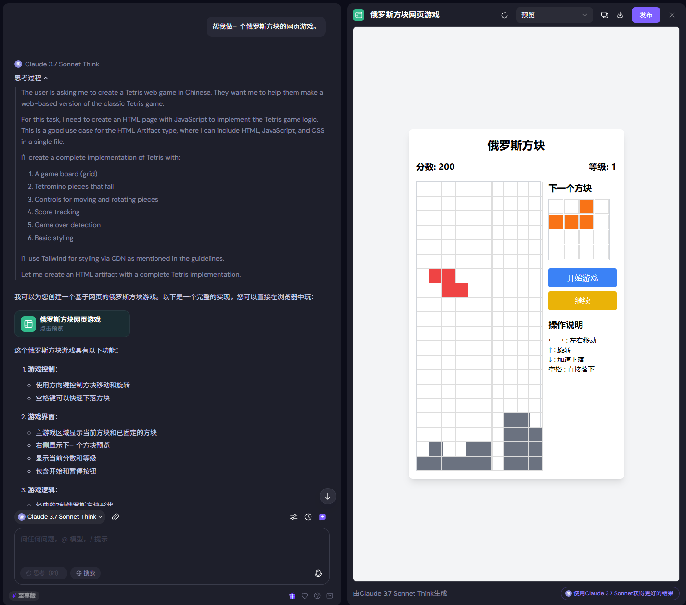
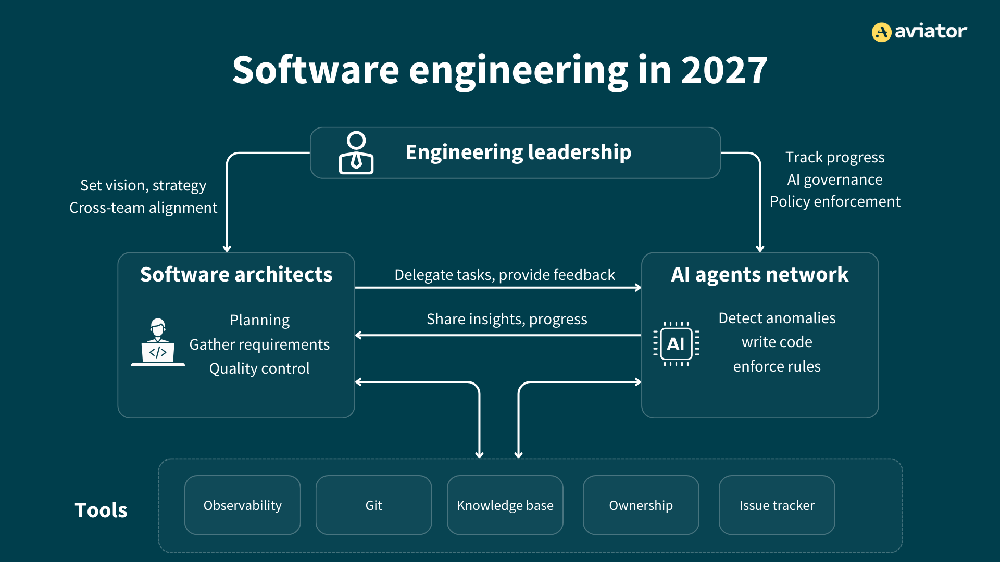
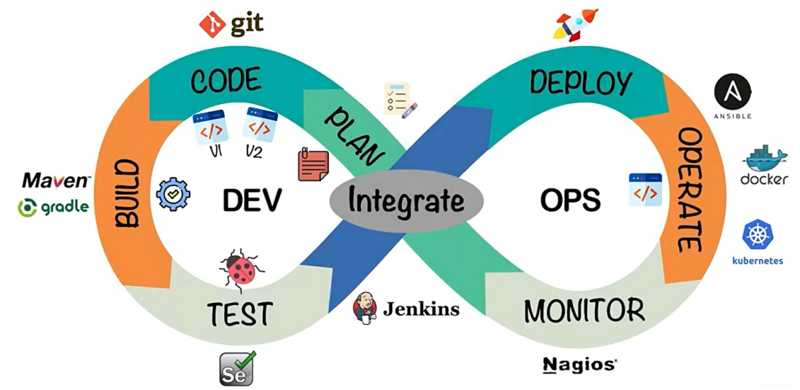
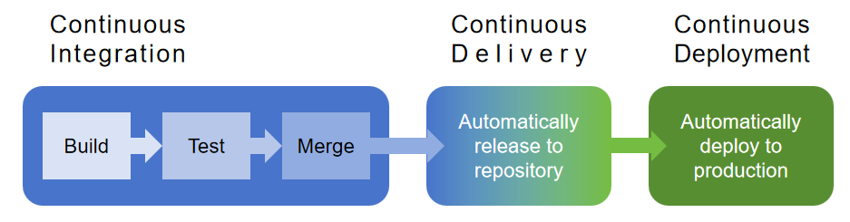
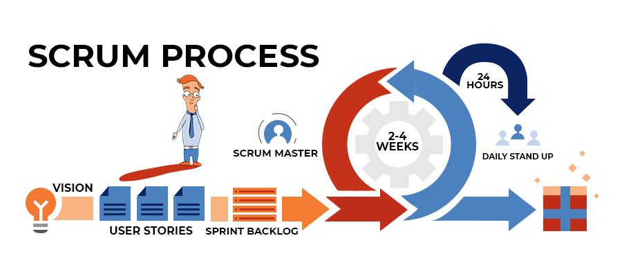

作者：
起草日期：2025 年元月初一
更新日期：2025 年 6 月 10 日
当前版本：0.2.5
“这是最好的时代，这是最坏的时代；
这是智慧的时代，这是愚蠢的时代；
这是信仰的时期，这是怀疑的时期；
这是光明的季节，这是黑暗的季节；
这是希望之春，这是失望之冬；
人们面前有着各种事物，人们面前一无所有。"—— A Tale of Two Cities, by Charles John Huffam Dickens
目录
- 序章
- 探索之路
- Agentic DevOps
- 实践
第 0 章、序章
0.1 软件开发新纪元
Agentic AI 给软件开发者带来了巨大的冲击，当我开始编写这篇文章的时候，正是 AI 辅助开发工具开始井喷的 2025 年 1 月。
Cursor 这个发布于 2023 年 3 月的 AI 编程辅助工具，正在以二周到三周左右的迭代速度持续发布。2025 年 2 月初我承接了一个软件开发技术咨询案，帮助好友创办的企业的大批程序员学习 AI 辅助开发，当时我还在用 Cursor 0.45 版本，还在谈及 Composer 的优势和便利，然而一个月不到，Cursor Agent 上线了。我在给这家企业的员工的讲座中，不得不更新内容以勉力跟上形势。
随着 2025 年初，Deepseek 开源了推理模型 R1，Agentic AI 也逐渐展现出更强的推理能力。同时 AI Agent 也开始成为了 AI 世界最瞩目的焦点。在 AI Coding 这个极"卷"赛道上，基座模型的能力飞速更迭，同时，Cursor、Windsurf、Github Copilot、Aider、Cline、Devin、Codex、Jules，…，这些 AI 辅助编码（或辅助开发）工具一次又一次地刷新人类对编程的认知。
2025 年 2 月 3 日，Andrej Karpathy 在 x 上发了一个帖子，提及了"Vibe Coding"这个看起来有些奇怪的陌生短语。

2025 年 3 月 23 日，Andrej Karpathy 在后续的一个帖子中提及：“我刚刚凭感觉用 Swift 写了一个完整的 iOS 应用程序（以前从未用 Swift 编程过，尽管过程中学了一些），大约 1 小时后，它居然就在我的实体手机上运行了。太简单了…”
"Vibe Coding"这个词彻底被引爆了。同时，关于人类程序员未来何去何从这个话题，自此也开始向"悲剧结局"的走向倾斜。

使用 AI Coding 工具的程序员，普遍都知道 AI Coding 至少目前并非万能神药。
做一个"贪吃蛇"、"俄罗斯方块"这样的 Web 小游戏，靠能力强大的 LLM，只需要一个 Prompt, 就几乎可以一遍即过，生成一个可运行的成品；如果做一个用于验证的快速原型小应用，借助 AI Coding 也几乎可以做到极其敏捷地生成一个比较符合需求的可运行的 MVP，—— 原先需要一个月甚至两个月的开发周期，现在可缩短至三到五天就完成。

然而，当我们需要构建一个业务逻辑更复杂一些的系统，要兼顾代码质量、人类可维护、优雅等多重因素，还需要考虑到生产环境的部署、运营安全、可靠、高性能…，此时，我们就经常听到了很多抱怨，例如：
- “AI 还是不太理解我的意思。”
- “改一个简单 Bug，居然把对的又改错了。”
- “反复说过多次，叫 AI 不要改动后端代码，但是它还是经常忘记。”
- “AI 生成的代码不可靠，绝对不要相信，请自己检查。”
这是一个让我们既可以听到"程序员已死"，又可以听到"AI 让程序员更强大"，—— 这样充满了矛盾的、但又都有其合理性的不同声音的混乱又美好的时代。
0.2 AI Coding 的现状
2022 年 7 月 7 日，Github 发布了一篇关于 Github Copilot 的文章：Research: quantifying GitHub Copilot’s impact on developer productivity and happiness，揭示了 Github Copilot Labs 关于使用 AI 辅助编程工具的一个量化评估实验。此处，我引用文章中的结论：

我们招募了 95 名专业开发人员，将他们随机分为两组，并记录他们用 JavaScript 编写 HTTP 服务器所需的时间。一组使用 GitHub Copilot 完成任务，另一组则没有。我们尽可能控制了许多因素——所有开发人员都已熟悉 JavaScript，我们给每个人相同的指示，并利用 GitHub Classroom，通过一个测试套件自动对提交的正确性和完整性进行评分。
在实验中，我们测量了每组完成任务的平均成功率和所需时间。
- 使用 GitHub Copilot 的组完成任务的比率更高（78%，相比之下未使用 Copilot 的组为 70%）。
- 最显著的差异是使用 GitHub Copilot 的开发人员完成任务的速度明显更快，他们比未使用 GitHub Copilot 的开发人员快 55%。具体来说，使用 GitHub Copilot 的开发人员平均花费 1 小时 11 分钟完成任务，而未使用 GitHub Copilot 的开发人员平均花费 2 小时 41 分钟。这些结果具有统计学意义（P=.0017），速度提升 95%的置信区间为 [21%, 89%]。
这个实验对于实施 AI Coding 的效果给出了一个证明：借助 Github Copilot 这样的 AI 辅助编码工具，可以极大地提升开发能效。
随着近两年的 AI 辅助编码工具的发展，可以确信的是人类借助 AI 能力进行软件开发的效率还在不断地提升。
“AI Coding”、“AI Dev”、“Vibe Coding”，这些都是热门搜索关键词，我相信你读到这里，可能也已经开始使用某个 AI 搜索工具，或使用 Deep Research 开始了研究。这里就简单列出几篇我读过的文章：
- The Rise of the ‘Code Producers’: AI and the Future of Programming
- The Current State of AI for Coding: Powering the Future of Software Development
- Chief AI Officer Blog - The future of coding is here: How AI is reshaping software development
- What Will Software Engineering Look Like in 2027?
我也使用了 LLM / Deep Research 来"阅读"过这些文章，并归纳了一些核心观点如下：
- 资深工程师通过 AI 工具获益最大，能够准确指导 AI 并识别输出中的缺陷；而初级工程师虽然效率提高但可能面临架构理解和错误检测的挑战。
- 初创公司和小团队可以利用 AI 工具以更低成本加速开发进度，而企业团队则可以在规模化的同时保持控制和一致性。
- 非技术创新者可以借助 AI 平台将想法快速转化为原型，无需深厚的编程技能，但扩展到 MVP 之外仍需专业人士避免技术债务。
- 工程团队将变得更加精简，从"两个披萨团队"缩减为"一个披萨团队"，因为大量工作可以在监督下外包给 AI。
- 软件架构师角色将兴起，负责系统架构设计、将产品需求文档转化为现实，并充当"AI 代理的管理者"。
- AI 编码市场预计将在 2034 年达到 990 亿美元规模，2025 年被预测为突破性的一年，但开发人员仍需平衡 AI 提供的速度与可维护、高质量代码的需求。
最后列出的这篇文章中有一幅插图，引起了我的关注：

图中展示了两年后，软件工程师就剩下了两个人类角色：
- Engineering Leadership（工程负责人）
- Software architects（软件架构师）
其余的团队成员都是 AI Agents。换句话说：大批的程序员都被 AI 取代了。
0.3 薛定谔的"程序员"
或许，程序员还未死；但，程序员作为一个职业大概率终会消亡 —— 这也是我的观点。不过，我需要详细解释一下：
预测 1：未来人人都是程序员 —— 借助 AI 的能力。
预测 2："程序员"作为一个单一职业，终将消失。（这个进程有人认为 2 年，有人认为更久。）
关于第 1 个预测，我相信大家都能理解。关于第 2 个预测，实际上现在已经有了端倪：大量的科技公司，已经针对程序员岗位开始裁员。有人可能会乐观一些，认为不管怎样，程序员还是被大量需要，因此"程序员已死"是无稽之谈。但是，我的观点是这样的：
- 第一，当程序员成为一个很容易被裁撤的工作岗位，那么未来还会有那么多孩子会选择以程序员为职业目标进一步深造吗？
- 第二，未来如果 AI 编码能力更强大，从而让人人都能成为"程序员"，那么"职业程序员"存在的意义何在？
- 第三，或许我们终究还是需要一些职业选手，去缔造 AI，维护"虚拟世界"的基础 —— 代码，但是，他们还会被称为"程序员"吗？我觉得可能他们的职业会被叫做：AI 领域专家、网络运维工程师、系统架构师、产品经理、大数据分析师、软件研究员…
这都不重要，我无意参与辩论。持不同观点，我都能接受（我也没那么坚定 😉）。重要的是，我们依然需要也不得不拥抱"AI"。
0.4 这篇文章写什么？
从标题"Agentic DevOps"来看，我要写的是关于在软件过程体系中引入 Agentic AI 的方法与实践 —— AI 时代软件过程方法的改进方案。
这篇文章会结合实践，探索如何在软件开发过程中，更好地利用 AI，准确地讲，是 Agentic AI。
Agentic AI 是指依托模型（Models）的能力，构建的智能体（Agents，也被翻译为：代理）网络。其中：
- 模型（Models）在当前的语境中主要指基于 Transformer 体系架构的 LLM/MLLM（大语言模型，或多模态大语言模型），是 Agents 的大脑；
- Agents 被定义为具备环境感知（Vibe awareness）能力的，能够自主规划（Autonomic Planning）、具备推理（Reasoning）、记忆（Memeory）、与执行（Action）能力的程序体。
用一个简单的公式来表达：
需要指出的是，AI 不仅仅有 LLM，LLM 也未必代表未来 AI 的主流。AI 的发展非常快，且经常会有颠覆性。当前，由于 LLM 是体现了最强智能的模型体系，因此成为首选。未来可能会有其他架构体系的模型取代其地位。
例如，液态神经网络目前因其独特的动态适应能力而备受关注。液态神经网络能在运行时持续学习并适应新数据流，展现出类脑的灵活性与环境交互能力。研究证实，这种生物启发算法在实时性、能效比及小样本学习等关键指标上均超越主流深度学习方案。除此之外，RetNet，RWKV，Mamba，UniRepLKNet，StripedHyena，等各种新的神经网络架构不断地在寻找突破的机遇。
或许某一天，新的模型架构体系会颠覆现有 Transformer 一统天下的格局。随之而来的是：构建了人类社会中"虚拟世界"的基础组件 —— 代码，也会进一步更快速地发生更剧烈的蜕变。
回到这篇文章的话题 —— Agentic DevOps 是一套依托 Agentic AI 的 DevOps 过程方法。
这套方法不仅仅局限于 AI Coding。站在软件过程方法的角度，我们需要思考的是：除了 Coding 这个环节，软件过程实际上包含了软件开发的整个生命周期，从需求探索、设计、编码构建、测试、集成、部署，到运营、监控、维护，这个过程中，Agentic AI 是否能够发挥更大的作用，从而帮助人类（现在的程序员）获得更高的开发效率，得到更高质量的、更鲁棒的、可维护的最终产物或产品？
这些思考中的实践就是这篇文章的全部内容。
0.5 我为什么写这篇文章？
既然，我认为"程序员"终将消亡，为什么我还需要写这篇文章去探索程序员的软件开发之路？
很显然，当下的程序员依然需要更好地掌握 AI 工具来提升自己的能力，从而在这场惨烈的生存竞争中活下去，然后，蜕变其角色获得新生。虽然可能 AI 最终要取代程序员，但如果不向 AI “对齐”，当下就会立即被"掌握 AI 的程序员"取代。因此，这篇文章是写给当下的程序员的。
其次，“未来人人都是程序员"的前提是人人都能借助 AI 的能力去成为"程序员”，那么，更好地探索利用 AI 的能力也就是"未来程序员"都需要掌握的必备技能。因此，这篇文章也是写给"未来的程序员"的。
实际上，我依然相信，未来一定有一部分专业的程序员存在（未必以编码为生，不一定是"职业的"，但是是"专业的"），他们热爱代码的世界，并富有更强大的创造能力，他们不仅具有深厚的技术积累，也可以熟练地操控 AI, 甚至掌控 AI。他们会是我眼中的"超级个体"。
第 1 章、探索之路
软件开发是一个实践过程，因此，要探索 Agentic DevOps，我们需要从观察 Agentic AI 以及探索 DevOps 实践两个途径入手。
1.1 AI 观察与"问题管理"
首先是"AI 观察"。我们以"问题管理"方法入手，从使用 Agentic AI 过程中遇到的问题出发，去思考解决方案。
需要注意的是：问题管理是"自底向上"的探索途径，所有的问题都琐碎且具体。我们需要做的是，除了找解决具体问题的具体方法，还需要探索我们面对的Agentic AI的秉性。因为我们会在 DevOps 全过程逐步引入它，就需要知道其能力边界与局限，换句话讲，就是知道Agentic AI到底适合做什么，可能哪些是不适合它的任务和工作。
"问题管理"源于 ITSM（IT 服务管理）的核心流程，是一种系统化的方法，用于：
- 识别：发现导致事件的潜在问题
- 分析：深入调查问题的根本原因
- 解决：实施解决方案
- 预防：防止类似问题再次发生
问题管理通过系统性的根因分析，不仅需要响应已经发生的事件（被动问题管理），还需要识别潜在问题（主动问题管理），从而去探索解决途径。
为此，我归纳了"九问"。
一问：如何解决 AI 编码工具的遗忘问题？
-
事件描述
在使用例如 Cursor、Github Copilot 的过程中，我们发现这些编码智能体会遗忘一些重要的 Prompts 设定。
例如：我在 Cursor rules 中设定了如下要求：
1
- Write tests first, then the code, then run the tests and update the code until tests pass.
当我与 Agents 长时间会话，提供了多个上下文内容的时候，我接着要求在 authentication 的过程中，加入 HttpOnly Cookie 的功能实现，Agents 忘记了那个关于 TDD 的规则，把 Test Driven 抛诸脑后，"勇往精进"地写完了代码，欣喜地告知我任务完成了。
更麻烦的情况是，如果你遇到一个新的编译问题，如果你的 Agents 比较"健忘"，你就会发现之前发生过的同类问题，已经找到解决办法了也纠正过了，当隔了一段时间再次遇到这种问题，Agents 会花费大量 tokens 在错误的循环探索中反复横跳。
-
根因分析
关于 Agent 的"遗忘"问题，存在两个根因：
- 首先是 LLM 的上下文限制
- 其次是 Agent 的记忆能力机制的限制
关于 LLM 的上下文限制的根因有多个方面，包括：
- 注意力稀释问题：Transformer 的自注意力机制需要为序列中的每个 token 分配注意力权重，且所有权重总和为 1。当序列变长时，每个 token 能分配到的平均注意力权重减少，重要信息的注意力被大量无关信息稀释，模型难以"专注"于关键内容。
- 位置编码局限：模型通常在固定最大长度（如 4k、32k）上训练，超出后位置编码失效；距离当前位置越远的信息，位置编码的区分能力越弱。
- 计算复杂度约束：为控制计算成本，LLM 可能被迫压缩或丢弃部分信息。
- 训练数据分布偏差：大多数预训练数据中，相关信息通常在较短距离内出现，模型缺乏学习超长距离依赖关系的机会，即使扩展了上下文窗口，如果训练数据没有足够的长依赖样本，效果仍然有限。
- 中间层信息传递衰减：信息需要通过多个 Transformer 层传递，每层都可能丢失部分信息，累积效应导致远距离信息严重衰减；梯度消失问题在长序列中更加明显。
Agent 的记忆力机制（Memory）存在短期记忆和长期记忆两种形态。长期记忆需要精准在记忆中找到精准匹配的关键信息，并在与 LLM 交互前召回。其召回信息的精确度，直接影响最终输出的结果；当知识工程信息量巨大的情况下，精确召回的困难也随之上升；此外，如果召回的信息内容片段很多，也可能超出 LLM 的上下文限制。
-
解决途径
显然，一旦基座模型是确定的，那么能够优化的就是 Agent；除此之外，还有就是了解了这些原理之后，如何自己来优化对 Agent 的使用。
可以通过以下解决途径来进行优化：
- 选择具有长下文窗口的基座模型。
- 增强 Agent 的记忆能力，对于支持 MCP 的 Agent (例如：Cursor, Cline 等)，选择合适的 Memeory MCP 增强工具。
- 更精准地在每一轮对话中赋予上下文内容，并在必要时重复提示重要规则。
- 归纳并摘要与 Agent 的重要交互结果，并记入辅助文档，在长程会话中，必要的时候，调用该文档作为 Context 加入 Prompt。
- 以优化的 RAG 对知识工程实现更高的召回精确度。
-
重要启发
- 在 DevOps 过程中，如果引入 Agent，我们需要认识到 Agent 的能力缺陷，例如：记忆力问题，从而在与 Agent 的交互过程中，更好地优化交互方式，控制会话上下文长度及精确度，挖掘其潜力，获得更好的输出。
- 对于 Agentic AI，我们一般可以从 LLM、Agent 两个层面去分析与定位，寻找增强其能力的解决方案。
- 基座模型往往是非常重要的、决定性的能力因素，因此在 DevOps 过程中，需要能力较强的基座模型或自行微调过的具备特定能力的模型。
- MCP 工具是增强 Agent/LLM 的潜在解决途径之一。
二问：如何抑制 Agentic AI 的幻觉 (Hallucination) 问题？
-
事件描述
Agentic AI 经常会给出错误的代码或答复，也会因为自行理解不存在的逻辑而在代码中添加很多不符合预期的内容。虽然目前的 Cursor 等工具在局部代码补全等方面准确率极高，但是当 Vibe Coding 时，幻觉引起的问题增多，这不仅影响代码质量，也会造成更多地人类干预，造成额外的开销和耗费。
-
根因分析
LLM 幻觉问题的根本原因源于其设计本质和训练机制：
- LLM 被设计为文本生成器而非知识检索器，基于概率分布预测下一个 token，优化目标是生成流畅、连贯的文本，高概率的语言学合理性不等同于事实正确性，模型会生成"听起来对"但实际错误的内容。
- 训练数据质量问题也是会造成幻觉的原因之一。
- 对齐目标偏差：RLHF 等对齐技术主要优化人类偏好（流畅性、有用性、无害性），事实准确性往往不是主要优化目标，人类评估者可能无法识别所有事实错误，模型学会迎合人类期望而非追求真实性。
- 缺乏真实世界锚定：模型无法访问实时、权威的事实数据库；缺乏验证机制来核实生成内容的准确性；无法区分记忆中的事实和推理产生的猜测；训练时的"世界模型"是静态和不完整的。
- 过度泛化和模式匹配：将训练数据中的局部模式错误地泛化到不适用的场景；基于表面相似性而非深层逻辑进行推断；在信息不足时倾向于"填补空白"而非承认无知。
- Transformer 架构缺乏显式的事实存储和检索机制，知识以分布式方式编码在参数中，难以精确控制，也没有内建的不确定性量化和自我校正能力。
在 LLM 层面，实际上大模型厂商都会进一步做系列优化，例如：在架构层面引入事实验证等。但这些优化一般是通用的。对于局部知识，并不一定有效。
-
解决途径
常用的手段包括 RAG，调用工具（Tool use）以获得实时外部数据或信息。在 DevOps 的过程中，构建外部的知识库是常用的有效解决途径之一。
此外，开发过程是一个复杂过程，构建关于代码仓库的辅助文档，作为上下文内容，及时准确地喂给 LLM，可以有效地抑制幻觉。举例来讲，Agent 可能不知道你调用的 API 细节，此时，如果把 API 文档及说明丢给 Agent，一般来讲就会生成正确的调用代码。
-
重要启发
- LLM 的输入都是 Prompts，不论是 System Prompt，Cursor 等工具的 Rules，还是临时喂给 Agent 的相关文档，本质上都是 Prompt。其中，给定事实性内容的上下文(Context)，对输出内容的准确性具有重要影响。因此，我们需要为每一次对话构建准确的 Context。
- 对于外部事实性信息，可以借助 MCP tools 获得。
- 对于每一轮会话，在 DevOps 过程中往往是长程的，我们需要控制每一轮会话的语境的"粒度"，让这个"粒度"不要跨度过大。控制"粒度"的方法主要包括：
- 将复杂任务进行分解，每一轮会话解决一个任务。
- 每个任务的粒度，不要牵涉过多的上下文内容。
关于"粒度"，就和人类解决问题是类似的，当千头万绪的任务丢给人类，如果希望一下子就给出完美方案显然是困难的，经过分解，逐步完成，则可以解决任何复杂任务。—— 这一点，和软件工程的"User Stories"或"Use Cases"编制原则、“模块化”、“迭代”、“保持函数或类的 SOLID”、“解耦"等等原则和做法是高度契合的，其核心解决途径就在于"如何分解”。
三问：Agentic AI 不适合用于遗留系统的维护？
-
事件描述
在我给好友的那家公司提供咨询的过程中，遇到一类问题，他们公司承接了一家大客户的遗留系统维护和改造服务。他们综合使用了包括 ChatGPT，Gemini，Claude，Deepseek R1 等主流模型，以及 Cursor、通义灵码、Github Copilot 等 AI 辅助编码工具之后，得出一个结论：AI 对遗留系统的维护和改造能够起到的作用微乎其微。主要表现包括（但不限于）：
- 对代码中的业务逻辑（Business Logics）理解偏差较大。
- 非标准的技术框架代码的理解和应用表现不佳。
- 大型代码库的理解困难，甚至无从下手。
- 数据库中大量存在的复杂过程（一个复杂过程编码往往有数百行代码），解读困难。
- 在既有文档缺失的情况下，增加新功能、补丁困难重重。
-
根因分析
对于这类问题，LLM 确实可能存在一些局限，很难突破能力天花板。
遗留系统的现代化，其最终的目标状态和可行的迁移路径往往并非唯一，且过程中充满了未知和不确定性。企业特定的、核心的业务逻辑往往是独一无二的，在公开的代码库中很难找到大量相似的、高质量的样本供 AI 学习和模仿。深度领域知识的运用，更是依赖于对特定领域规则和约束的深刻理解，这些往往是高度内隐的，难以通过简单的提示完全传达给 AI。
-
解决途径
对于这类触及 Agentic AI 当前能力天花板的问题，并无"特效药"。目前，对于代码解读能力较强的 AI 工具，例如 Jules、Code Rabbit 等，一方面需要将代码库曝露在公网上（例如 github），然后交给 Jules 之类的工具去解读。对于大多数企业来讲，涉及内部安全等问题，是不允许这么做的。而且，即便做这样的尝试，取得的效果并不能预测。
因此，针对这类问题，需要企业自己训练针对性的模型，或者私有部署合适的模型，并构建强大的 Agent 工具去做尝试，并不断优化。这个解决方案，对于大多数企业来讲，成本高、开销大、技术要求高（甚至可能没有这方面的能力）。
一个折衷的办法，是对于 Legacy System，先完善 API 文档，建立良好的隔离，并基于 API 文档执行功能增补等任务。在这个基础上，依靠人类的干预对旧代码进行分解，逐步解耦模块，按模块逐步迁移旧代码，每一步迁移都需要建立好新的"隔离"措施，完善好文档。
-
重要启发
通过之前的三个问题，我们基本上可以得出一个重要结论：Agentic AI 的有效性，与其所处理任务的"问题定义清晰度"和"解空间收敛度"之间存在强烈的正相关关系。
针对遗留系统的现代化改造、高度定制化的企业级应用开发、需要深度领域知识的模块设计等任务，都普遍存在着"问题定义模糊"和"解空间发散"的特点。
在当前 Agentic AI 的能力范围之外，恰恰是人类开发者核心价值体现之处。人类开发者可以处理模糊性、定义复杂问题、探索创新性解决方案，以及将那些宏大而模糊的工程目标，分解为 AI 能够有效理解和处理的、定义更清晰、解空间更收敛的子任务。
四问：Agentic AI 生成的代码质量究竟如何？
-
事件描述
一般如果适应了在一个严谨的工程项目中高频使用 Cursor、Github Copilot 等 AI 编码辅助工具的有经验的程序员都会反馈，AI 生成的代码有时候比人写得好，但有时候代码质量堪忧：
具体表现包括：
- AI 生成的代码可能存在冗余与低效的问题。尽管代码在功能上可能正确，但其实现方式可能包含不必要的复杂逻辑、重复的代码块、随意增加的不符合 SOLID 原则的方法或类型，等等。
- 一个比较值得注意的问题是 AI 代码会偏离既定的最佳实践与编码规范。在大型团队和复杂项目中，遵循统一的编码标准、设计模式和开发规范对于保证代码一致性、可读性和可维护性至关重要。虽然通过 Agent 工具提供的 Rules 等方法的约束，可以取得一定的便利，但 AI 还是可能会写出不符合规范的代码。
- 一项对大量代码变更进行分析的研究（GitClear）发现，自 AI 编码工具广泛应用以来，“复制/粘贴的代码"的增长速度远超"更新”、"删除"或"移动"的代码，这种代码构成特征类似于短期开发者未能深思熟虑地将其工作整合到整个项目中的情况。同时，代码流失率（churn rate，即代码在编写后短时间内被废弃或重写的比例）的显著上升也从侧面印证了 AI 生成代码可能需要更多轮次的修改才能达到生产环境的质量要求。
-
根因分析
AI 编码工具代码质量问题的根本原因源于其设计本质和优化目标：
- 速度优先的设计理念：AI 编码工具被设计为代码生成器而非质量保障器，其核心优化目标是生成流畅、可运行的代码，而非最优质量的代码。高概率的语法正确性不等同于代码质量优秀性，模型会生成"能用"但实际低效或不规范的内容。
- 训练数据质量的影响：AI 模型的训练数据通常来自海量的公开代码库，其中不可避免地包含了各种质量层次的代码，包括初学者编写的低质量代码、未经优化的原型代码、以及违反最佳实践的历史遗留代码。模型在学习过程中，可能会无意中学习并重现这些不良模式。
- 缺乏深层语义理解：LLM 对代码的理解在很大程度上依赖于词法和句法层面的特征，而非代码背后真正的语义和逻辑意图。这种语义理解的不足，构成了所谓的"语义鸿沟"。AI 工具可能生成表面上看起来正确无误的代码，但实际上对深层语义的误解可能引入难以察觉的逻辑缺陷。
- 对质量非功能性需求的忽视：AI 往往优先考虑功能的快速实现，而非性能优化、可维护性、可扩展性等非功能性需求。对于特定硬件平台的资源限制、并发模型下的细微竞争条件等，AI 的理解往往不够深入。
-
解决途径
针对代码质量问题，可以从以下几个层面进行改进：
- 建立代码审查机制：任何 AI 生成的代码都必须经过人类开发者的审查，特别关注代码的可维护性、性能效率和规范遵循情况。建立 AI 代码的特殊审查清单，重点检查常见的 AI 代码质量问题。
- 完善提示工程（Prompt Engineering）：在与 AI 交互时，明确指定代码质量要求，包括性能要求、编码规范、设计模式等。通过更精确的提示，引导 AI 生成更高质量的代码。
- 引入代码质量检测工具：结合静态代码分析工具、代码质量度量工具，对 AI 生成的代码进行自动化质量检测，及时发现并修正质量问题。
- 采用增量优化策略：不要期望 AI 一次性生成完美的代码，而是采用迭代优化的方式，先生成功能原型，然后逐步进行质量优化和重构。
- 建立企业级代码标准库：构建符合企业规范的高质量代码模板和最佳实践库，通过 RAG（检索增强生成）等技术为 AI 提供更好的参考样本。
-
重要启发
通过对代码质量问题的深入分析，我们得出以下重要启发：
- "速度陷阱"的警示：过度依赖 AI 快速生成代码而忽视其内在质量，可能导致技术债务的隐性累积。开发者和团队为了追求即时的开发效率，可能会不自觉地接受质量欠佳的 AI 生成代码，从而将问题和风险推迟到项目的后期，最终可能导致维护成本激增、系统稳定性下降。
- 质量标准的重新定义：在 AI 辅助开发的时代，我们需要重新定义代码质量标准。除了传统的功能正确性、可读性、可维护性外，还需要考虑"AI 友好性" —— 即代码是否容易被 AI 理解和扩展，以及"人机协作质量"——即人类和 AI 共同产出的代码的整体质量。
- 开发流程的适应性调整：传统的开发流程需要适应 AI 工具的特点，在快速原型和质量保障之间找到平衡。这要求我们建立新的质量门控机制，以及适应 AI 特点的代码审查和测试策略。
- 长期技术健康度的考量：在 DevOps 过程中，引入 AI 不仅要考虑短期的效率提升，更要关注长期的技术健康度。需要建立相应的度量机制，跟踪和评估 AI 辅助开发对整体代码质量和系统可维护性的长期影响。
五问：AI 编码工具和"AI 工程师"有什么区别？
-
事件描述
之前看到过一些博客文章，指出：Cursor, Github Copilot，Windsurf，Cline 等工具从产品形态上属于"编码辅助工具"，而 Devin、OpenAI Codex、Claude code、Google Jules 等产品形态，能够拥有更大的 AI 自主权，是"AI 工程师"，是未来的进化方向。
这样的结论经常给大家带来选择性困难。到底该用"AI 编码辅助工具"好呢？还是该选择"AI 工程师"？
-
根因分析
"AI 编码辅助工具"和"AI 工程师"的争论，其核心根源在于两者在自主性水平和核心架构上的根本差异。
-
自主性水平（Level of Autonomy）：这是最核心的区别。
- 编码辅助工具：这类工具是"人在回路"（Human-in-the-loop）的设计，人类开发者是绝对的核心和主导者。AI 的角色是辅助，它通过代码补全、函数生成、解释代码等方式，在开发者每一个细微的操作步骤中提供支持。
- AI 工程师：这类工具是"人在环上"（Human-on-the-loop）甚至"人离回路"（Human-out-of-the-loop）的设计，AI 自身成为了主导者。它被赋予一个高层级的目标（例如一个功能需求或一个 Bug 报告），然后自主地进行任务分解、规划、编码、测试和调试。
-
核心架构（Architecture）：不同的自主性定位，决定了它们完全不同的技术架构。
- 编码辅助工具：其架构相对简单，通常是"大语言模型 + IDE 插件"，核心交互模式是"用户的即时指令 → AI 生成建议"。它高度依赖于开发者提供的当前上下文。
- AI 工程师：其架构要复杂得多，是一个典型的"智能体（Agent）“架构。它以内置的大语言模型作为进行推理和规划的"大脑”，并配备一系列"工具集"（例如文件读写、命令行执行、网络访问、代码调试器等）。其工作模式是"目标 → 自主规划 → 使用工具 → 观察结果 → 迭代修正"，直至目标完成。
因此，将两者视为进化或替代关系，是对其本质定位的误解。它们是服务于不同场景、解决不同问题的两类工具。
-
-
解决途径
这并非一个"二选一"的难题，而是一个"如何协同"的策略问题。正确的解决途径是理解两者的适用场景，并将其整合到统一的开发流程中。
- 内循环（Inner Loop）依赖"编码辅助工具"：在开发者日常的、高频的核心开发环节（即"内循环"：编码-构建-调试），"编码辅助工具"是最佳选择。因为在这个阶段，充满了大量需要开发者深度思考、创造和决策的模糊性任务，AI 的角色是增强人类的智能，而非取代。
- 外循环（Outer Loop）尝试"AI 工程师"：对于那些定义清晰、边界明确、可独立完成的任务（例如：根据详细的需求文档实现一个新 API、修复一个有明确复现路径的 Bug、为已有模块编写完整的测试用例集），可以尝试交给"AI 工程师"处理。这相当于将一个完整的、标准化的工作包委托给 AI。
- 寻求融合与协同：未来的趋势必然是两者的融合。开发者可以在一个统一的环境中，根据任务需要，灵活地调整 AI 的自主性水平。就像汽车的"辅助驾驶"和"自动驾驶"一样，开发者可以对一个宏大任务启动"AI 工程师"模式进行初步实现，然后无缝切换到"编码辅助"模式，亲自进行精细的调整和优化。
-
重要启发
这个看似简单的工具分类问题，实际上揭示了 Agentic AI 将给软件开发带来的深刻变革。
- 开发者角色的再次进化：正如"体力劳动者"到"机器操作员"的转变，"AI 工程师"的出现，将推动软件开发者从"代码创作者"进一步向"系统设计者、问题定义者与方案审核者"进化。编写清晰的需求、设计优雅的架构、建立可靠的验证体系，这些核心工程能力的价值被前所未有地放大了。
- 自主性的"调光开关"：“编码辅助"和"AI 工程师"并非两个极端，而是一个连续的自主性谱系的两端。未来理想的工具应该提供一个"自主性调光开关”，允许开发者根据任务的确定性、自身的信心和风险的考量，随时调高或调低 AI 的自主程度。
- 重新定义"开发流程"：Agentic AI 将驱动开发流程的重塑。过去线性的、阶段化的流程，将变得更加动态和自动化。"AI 工程师"可以直接消费来自项目管理工具（如 Jira）的需求，完成开发和初步测试，然后自动创建合并请求（Pull Request），再由"AI 编码辅助工具"协助人类开发者进行高效的代码审查（Code Review）。这正是 Agentic DevOps 的未来核心图景。
六问：Agentic AI 在测试中表现到底如何？
-
事件描述
测试一直是个程序员不喜欢但又不得不重视的工作。幸好 Agentic AI 横空出世，现在的程序员可以用 AI 来设计测试用例、编写测试代码，甚至可以实施之前令人厌恶的 “TDD”。
但是，经过一个阶段的使用，我们发现：
- AI 生成的单元测试往往只覆盖"快乐路径"（Happy Path），对于复杂的业务逻辑、关键的边界条件和潜在的安全漏洞，测试覆盖严重不足，给人一种虚假的安全感。
- AI 对代码的业务意图理解存在偏差，可能写出"看起来正确"但实际上并未验证核心业务规则的测试。测试虽然通过了，但业务逻辑的正确性并未得到保证。
- 在需要复杂环境设置、数据模拟（Mocking）或跨模块集成的测试中，AI 往往表现不佳，因为它缺乏对整个系统架构的全局理解。
- 生成的测试代码可能与具体实现细节过度耦合，导致代码一旦重构，测试就立刻失效，增加了维护成本。
-
根因分析
AI 在测试领域的表现不佳，其根源与它在其他方面的局限性一脉相承：
- 缺乏业务全局观：测试，特别是集成测试和端到端测试，极度依赖对整个应用架构、数据流和业务流程的理解。AI 的上下文窗口有限，无法感知代码之外的业务全景，自然难以设计出有效的综合性测试。
- 浅层语义理解的再次体现：AI 能理解函数的输入输出（语法层面），但难以理解这个函数在特定业务场景下的"应然"行为（语义层面）。因此，它能保证函数被调用，但无法保证调用的结果符合真实的、隐晦的业务预期。
- 训练数据偏向性：公开代码库中充斥着大量的、简单的单元测试，而高质量的、覆盖复杂业务场景的集成测试和端到端测试案例则要稀疏得多。AI 从这些数据中学习，自然更擅长生成前者，而非后者。
- 对"测试设计"的无能为力：高质量的测试，其核心价值在于"测试用例的设计"，这需要测试者具备批判性思维、探索性思维和对领域的深刻理解，去预想各种可能的失败模式。这是一种创造性的智力活动，恰恰是当前 AI 的能力短板。
-
解决途径
要让 AI 在测试中真正发挥作用，关键在于改变人机协作的模式，将 AI 定位为"助手"而非"主导者"。
- 人类负责设计，AI 负责实现：开发者或测试工程师的核心职责是设计出高质量的、覆盖全面的测试用例（Test Cases）。然后，可以将这些用自然语言或伪代码描述的测试用例交给 AI，由它来生成具体的测试代码（Test Code）。
- 测试驱动开发（TDD）的新范式：TDD 的核心是"先写测试"。在 Agentic 时代，这可以演变为"先写测试规约（Specification），再让 AI 生成测试和代码"。开发者首先用清晰的语言定义好一个功能的验收标准和各种边界条件，然后让 AI 基于这份"规约"生成测试代码，再生成能通过测试的功能代码。
- 结合覆盖率工具进行增量生成：运行 AI 生成的测试，并利用代码覆盖率工具检查测试的"盲区"。然后，将这些"盲区"作为新的、更精确的指令，要求 AI 补充相应的测试用例。
- 构建私有测试知识库：将团队内高质量的测试用例、常见的 Bug 模式、特定业务领域的测试最佳实践整理成知识库，通过 RAG 等方式喂给 AI，可以显著提升其生成测试的质量和针对性。
-
重要启发
通过审视 AI 在测试中的表现，我们可以获得关于软件质量保障的深刻启发：
- 测试的核心价值是"设计"而非"编码"：AI 的出现，反而凸显了测试设计的核心价值。编写测试代码的重复性劳动可以被自动化，但构思测试场景、设计测试边界、预判风险的智慧，是人类不可替代的价值。
- TDD 是驾驭 AI 的"缰绳"：如果我们担心 AI 生成的代码质量不可控，那么 TDD 就是约束它的最佳工具。一个由人类精心设计的、全面的测试套件，成为检验 AI 工作成果的最终标准，确保 AI 的"快"不会牺牲"好"。
- 质量保障的左移（Shift Left）：AI 可以帮助我们将质量保障活动进一步"左移"。在编码阶段，通过 AI 快速生成单元测试，可以更早地发现和修复问题，降低缺陷修复的成本。
- 测试工程师的技能转型：未来，测试工程师的价值将更多地体现在"定义质量标准"、"设计测试策略"和"构建自动化测试体系"上，而不仅仅是手工执行测试或编写测试脚本。理解业务、定义问题、设计场景的能力将变得至关重要。
七问：编码之外，Agentic AI 还能做什么？
-
事件描述
太多的焦点关注着"AI 编码"工作，以代码为核心的工作，还牵扯了很多文档工作，为此，程序员们偶尔会关注增加一些文档，来帮助 AI 更好地编码。但是，较少有人去重新思考一下，在软件过程中，Agentic AI 是不是只是个"程序员"？有没有可能，Agentic AI 不仅仅是个"程序员"？
-
根因分析
将 Agentic AI 的角色局限于"程序员"，其根源在于几个方面：
- 能力的初始印象：大语言模型（LLM）最初以其强大的代码生成能力惊艳了世界，这使得第一波 AI 工具（如早期的 Github Copilot）都聚焦于编码辅助。这种先入为主的印象导致了市场和用户的注意力过度集中在"写代码"上。
- 显性知识与隐性知识的差异：编码工作是基于"显性知识"（编程语言、算法、API 文档）的，这类知识在全球的代码库中有海量的、结构化的数据可供 AI 学习。而像产品经理、架构师、项目经理等角色，其工作更多依赖于"隐性知识"，如商业洞察、组织沟通、对特定业务的深刻理解等，这类知识难以量化和学习。
- 交互模式的限制：传统的"编码辅助工具"是基于"指令-执行"模式的，开发者给出精确指令，AI 返回代码。这种模式天然适合编码任务。而要让 AI 扮演其他角色，则需要更高级的、基于"目标驱动"的 Agentic 架构，这在技术上更具挑战性。
- 缺乏跨领域的"工具集"：一个人类程序员只需要键盘，但一个人类项目经理需要使用 Jira、Confluence，一个 SRE 需要使用 Datadog、Prometheus。要让 AI 扮演这些角色，就必须为它提供并训练它使用这些专业工具的能力，这是一个复杂的系统集成问题。
-
解决途径
要释放 AI 在编码之外的潜力，核心思路是：将 Agentic AI 视为一个团队成员，并为它分配不同的角色、提供相应的知识和工具。
虽然，现在提出这个做法可能有些超前（AI 的能力局限依然明显，响应的 Agents 尚未涌现），但实际上，现在已经到了我们应该重新审视软件工程方法的最佳时机。
-
重要启发
当我们把视野从"AI 编码"扩展到整个软件开发生命周期时，会得到更具颠覆性的启发：
- 从"AI 程序员"到"AI 原生开发团队"：未来的软件开发，可能不再是"人类团队 + AI 助手"，而是"人类专家 + AI 原生开发团队"。人类的角色是定义目标、制定战略和最终决策，而一个由 AI 产品经理、AI 架构师、AI 程序员和 AI 测试工程师组成的虚拟团队，负责完成绝大部分的执行工作。
- "知识工程"的核心价值凸显：要让 AI 胜任这些新角色，关键在于为它们提供高质量的、结构化的"知识"。因此，如何将组织内部的隐性知识（如业务逻辑、架构决策、运维经验）转化为 AI 可消费的显性知识库，将成为企业新的核心竞争力。这正是 Agentic DevOps 强调的重点。
- DevOps 是 Agentic AI 的最佳实践框架：DevOps 文化所倡导的自动化、持续反馈、跨职能协作，为这个"人机混合团队"提供了完美的运作框架。CI/CD 流水线成为 AI Agents 之间传递工作成果的"传送带"，监控数据成为驱动 AI 自我优化的"反馈信号"，整个开发流程被前所未有地整合与加速。
- 人机协同的终极图景：人类的创造性、战略性思维与 AI 的高效执行、数据分析能力相结合，形成一个强大的共生体。人类从繁琐的执行工作中解放出来，更专注于创新、决策和对复杂系统的整体把控，最终实现软件开发效率和质量的飞跃式提升。
八问：Vibe Coding 真的是未来趋势吗？
-
事件描述
Vibe Coding 的核心思想是让人类关注于编码之外的事务，把编码和纠错都交给 Agentic AI。这在原型开发或小应用开发中，效果是显著的。在大型工程项目中，却很少有人这么做。为什么？
-
根因分析
Vibe Coding 之所以在大型工程项目中难以推行，其根源在于它试图跳过软件工程中至关重要的中间过程和工程规训。
- 大型工程的本质是"确定性工程"：与原型开发的探索性和不确定性不同，大型工程项目追求的是高确定性、高可靠性和高可维护性。这需要一个严谨的、结构化的开发过程，其中每一步（需求分析、架构设计、编码、测试、部署）都需要被清晰地定义、执行和验证。Vibe Coding 模糊甚至跳过了这些定义和验证过程，这与大型工程的本质是背道而驰的。
- "解空间"的巨大差异：原型开发或小型应用的"解空间"是有限的，AI 或许可以"猜"中一个可行的方案。而大型工程项目的"解空间"是巨大的，它受到无数显性（如技术规范、性能指标）和隐性（如团队习惯、历史包袱）约束的限制。在没有清晰蓝图和路标的情况下，让 AI 在这个巨大的解空间中自由探索（Vibe），其结果几乎必然是混乱和失败。
- 信任与责任的鸿沟：Vibe Coding 模式下，人类开发者将大量的控制权和责任让渡给了 AI。在原型开发中，这无伤大雅，因为失败的成本很低。但在大型工程中，一个微小的错误都可能导致严重的后果。由于当前 AI 的行为仍存在不可预测性（幻觉）和"黑箱"特性，人类工程师无法给予其足够的信任来承担如此重大的责任。
-
解决途径
我个人非常喜欢 Vibe Coding，也一直在积极尝试。但，在 2025 年这个时间点，我还是持审慎的态度去看待在大型工程项目中的 Vibe Coding。或许当下的较优实践途径是：
- 在"探索阶段"拥抱 Vibe Coding：在项目初期、技术选型阶段、或新功能的原型验证阶段，Vibe Coding 是一种极佳的探索工具。它可以帮助团队快速地尝试不同的技术方案、验证想法的可行性，从而激发创新和加速决策。
- 将 Vibe 的产出作为"毛坯"而非"成品"：通过 Vibe Coding 快速生成的代码，不应被视为最终交付物，而应被看作是一个需要进一步加工和精炼的"代码毛坯"。
- 建立从"Vibe"到"工程"的转换流程：团队需要建立一个明确的流程，用于将 Vibe Coding 的原型产出转化为符合工程标准的代码。这个流程至少应包括：
- 代码审查与重构：由人类工程师对 AI 生成的代码进行严格审查，剔除不合理的设计，重构低效的实现，使其符合团队的编码规范和架构原则。
- 补充测试用例：根据前面章节提到的原则，为"代码毛坯"补充全面的单元测试、集成测试，确保其逻辑的正确性和稳定性。
- 完善文档：为代码补充必要的注释和设计文档，使其成为可被团队其他成员理解和维护的工程资产。
-
重要启发
对 Vibe Coding 的深入思考，为我们揭示了人机协同的本质和软件开发的未来形态。
- "探索"与"规训"的二元性：软件开发天然包含两种活动："探索式"的创造活动和"规训式"的工程活动。Vibe Coding 是 AI 时代"探索式"活动的极致体现。未来的开发模式，正是在这两种活动之间取得动态平衡。
- AI 重新定义"原型"：在过去，构建一个可交互的原型成本很高。现在，借助 Vibe Coding，AI 可以让我们在极短的时间内、以极低的成本获得一个功能性的原型。这极大地改变了我们验证想法和迭代产品的模式。
- 工程化能力是驾驭 AI 的基石：AI 的能力越强，就越是放大了"工程化能力"的重要性。只有拥有强大工程化能力的团队，才能将 AI 生成的、充满活力的"毛坯"，雕琢成坚固、可靠、优雅的"工程艺术品"。没有工程规训，AI 带来的高速度只会通向更高程度的混乱。
- 人机协同的边界：Vibe Coding 的局限性清晰地划出了当前人机协同的边界 —— 在需要高度确定性、可靠性和责任担当的领域，人类工程师的判断、设计和最终把关，仍然是不可或缺的。
九问：Agentic AI 会导致程序员技能提升还是退化？
-
事件描述
这几乎是每一位接触 Agentic AI 的开发者都会扪心自问的问题，社区的讨论也分为旗帜鲜明的两派：
-
技能退化论（“拐杖论”）：这一派观点认为，过度依赖 AI 会导致开发者的核心编程技能退化。就像习惯使用计算器可能导致心算能力下降一样，当开发者习惯于让 AI 生成代码、修复 Bug、甚至设计方案时，他们可能会逐渐丧失从零开始解决问题、进行深度调试、以及对复杂算法进行心智推演的能力。长此以往，开发者可能沦为只会提需求的"提示词工程师"，对底层原理的理解越来越肤浅。
-
技能进化论（“杠杆论”）：另一派观点则认为，AI 是一个强大的赋能工具，它将开发者从繁琐、重复的低级编码工作中解放出来，让他们能将更多精力投入到更高价值的活动中，例如：系统架构设计、复杂业务逻辑梳理、技术方案的权衡与决策、与跨职能团队的沟通协作等。AI 成为开发者能力的"杠杆"，让他们能撬动更复杂、更宏大的项目，从而实现个人技能的整体跃迁。
-
-
根因分析
这场争论的根源，在于 AI 对"程序员"这一角色的技能栈发起了结构性重塑，其核心在于：
- 认知外包 vs. 认知增强：AI 工具允许开发者将一部分认知负担"外包"出去，例如记忆 API 细节、编写样板代码。问题的关键在于，这种"外包"是导致了相关能力的"用进废退"，还是将认知资源节约下来，用于更高层次的"认知增强"活动（如抽象、设计、批判性思维）？这取决于使用者的主观意图和使用方式。
- 技能价值的重新分配：传统上，能快速、无误地手写出复杂算法被认为是高级技能。但当 AI 能在几秒钟内完成同样的工作时，这项技能的稀缺性价值必然下降。与此同时，另一些技能的价值被放大了，例如：定义问题的能力（如何向 AI 清晰地描述一个复杂需求）、验证方案的能力（如何设计测试和评估标准来确保 AI 的方案是正确、可靠的）、系统集成的能力（如何将 AI 生成的局部代码优雅地融入现有的大型系统中）。
- "舒适区"的诱惑：AI 提供了一个前所未有的"舒适区"，让开发者可以快速获得"看起来能用"的解决方案，而无需深入理解其背后的原理。对于缺乏自律和成长心态的开发者来说，极易陷入这种即时满足感的陷阱，从而停止了对更深层次知识的探索，导致技能停滞甚至退化。
-
解决途径
要确保 Agentic AI 成为技能提升的"杠杆"而非"拐杖"，需要开发者、团队和教育体系的共同努力。
- 拥抱"刻意练习"（Deliberate Practice）：开发者需要有意识地将 AI 作为学习工具。例如，在 AI 生成代码后，不应满足于"能用就行"，而是要主动去理解其实现逻辑、思考是否有更优的方案、甚至尝试自己重写一遍，以加深理解。对于 AI 修复的 Bug，要去分析其根源，而不仅仅是应用补丁。
- 重新定义"人机协作"的边界：团队需要建立清晰的人机协作规范。例如，规定 AI 主要用于原型探索、代码草案生成、单元测试编写等任务，而核心的架构设计、安全审查、最终的代码合并等决策点，必须由人类开发者主导。这就像飞行员在大部分时间可以使用自动驾驶，但在起飞、降落等关键阶段必须手动控制一样。
- 调整学习与评估体系：教育机构和企业的内部培训，需要从传统的"教授知识"转向"培养能力"。重点应放在培养学生的问题分解能力、批判性思维、系统设计思维、以及提出高质量问题的能力上。在绩效评估中，也应降低对"代码行数"等低级指标的关注，提升对"架构贡献"、“技术影响力”、"解决复杂问题能力"等高级指标的权重。
- 构建"T 型"或"π 型"技能结构：开发者应利用 AI 快速拓宽知识面（T 型的横向），例如快速学习一门新语言、一个新框架。同时，要将节省下来的时间，用于深化自己的核心专业领域（T 型的纵向），如特定的业务领域知识、底层的系统原理、或团队领导力。
-
重要启发
这场关于技能的讨论，为我们揭示了 Agentic AI 时代开发者自我发展的核心逻辑。
- 核心技能的"升维"：程序员的核心技能并未消失，而是发生了"升维"。价值的重心正从"如何实现（How）"转向"定义什么（What）“和"确保为何（Why）”。定义清晰的问题、设计优雅的系统、确保方案的可靠性与长期价值，这些成为了新的核心竞争力。
- “成长型思维"是终极武器：在技术快速迭代的时代，唯一不变的就是变化本身。拥有"成长型思维”（Growth Mindset）的开发者，会将 AI 视为终身学习的强大盟友，不断挑战自我、拓展边界。而拥有"固定型思维"（Fixed Mindset）的开发者，则更容易感到威胁和焦虑，最终可能被时代抛弃。
- 责任的最终归属：AI 可以生成代码，但它无法承担责任。对软件产品的质量、安全、性能和伦理影响负责的，永远是人类开发者和其所在的组织。这份最终的责任，要求开发者具备超越编码本身的、更全面的工程素养和职业判断力。
- 从"学会编码"到"学会学习"：对于下一代开发者而言，最重要的或许不再是尽早地学会某一门具体的编程语言，而是学会如何学习，学会如何与一个日益强大的 AI "同事"有效协作，学会如何利用它来加速自己的认知和创造过程。
实际上，如果大家还记得 AlphaGo 在几年前击败了人类顶尖棋手李世石、柯洁的事件的话，现在再来回顾一下这几年围棋界的现况，大家会发现人类棋手的围棋水平整体得到了跃迁。—— 这就是以上我的观点的一个明证。
"九问"启示录
风起于青萍之末，以上"九问"皆是自末端生发，于日常琐务中遭遇。这是一个"自底向上"的探索过程。我写下这些问题的目的已经昭然 —— 于细微处见知著，自然仍需"引玉"。
纵观这些困惑，大多缘于"Agentic AI"这个新生物种而来。然而经过分析，我们不难联想到人类积累了大半个世纪的一门学科 —— 软件工程，这门学科一直在致力于解决软件过程中的各类困难，我们现在遇到的困惑并未脱离这门学科的研究范畴。因新生物种"AI"的到来，我们现在需要做的就是继续去更新与迭代这些长期积累的优秀方案，以适应新的变化。
1.2 梳理并理解软件过程方法
软件工程学致力于探究软件过程，系统性地积累了大量方案。这些方案是人类智慧的结晶，可以"自顶向下"地指导人类软件过程的实施。
为了更好地借鉴，我们先来梳理一下软件过程的系列里程碑事件。
1.2.1 回顾：软件过程发展的三个阶段
为了更轻快地切入主题，我将软件过程的发展划分成三个阶段和一个跨阶段存在的方法体系。
第一阶段：结构化方法（1960s - 2015 年前后）
最早期的软件开发方式，几乎没有正式的"过程"可言。开发者直接编写代码，然后不断测试和修复错误，直到软件勉强可用。
-
结构化方法兴起 (1960s - 1970s)：瀑布模型 (Waterfall Model)
为了应对"软件危机"，引入了工程化的思想。瀑布模型是最早被明确提出的过程模型，强调阶段的顺序性和文档化。它将软件生命周期划分为需求分析、设计、编码、测试、维护等线性阶段。
瀑布模型是影响深远的软件工程方法，直到今天，依然被一些大型软件工程项目所使用。
该方法需要强力的项目控制、可预测性和文档规范。但这种过程方法过于刚性、缺乏对变更的适应性。 -
对瀑布模型的改进和反思 (1980s): 迭代、增量、原型、螺旋模型
为了解决模型难以应对需求变更、用户在早期难以明确所有需求、项目风险高等问题，在 80 年代开始，出现了各种修正方案，包括：
- 迭代模型 (Iterative Model) 和 增量模型 (Incremental Model)：认识到线性开发的局限性，开始尝试将开发过程分解为更小的、可管理的循环或部分，逐步构建和交付系统。
- 原型模型 (Prototyping Model)：为了更好地理解用户需求，强调快速构建一个可运行的原型，获取早期反馈，减少需求不明确带来的风险。
- 螺旋模型 (Spiral Model)：由巴里·勃姆 (Barry Boehm) 提出，明确将风险分析和管理整合到迭代的开发过程中，每个循环都包括目标设定、风险评估、开发与验证、计划下一个循环。
-
软件工程的集大成（1990s - 2015 前后）：CMM/CMMI
CMMI (Capability Maturity Model Integration，能力成熟度模型集成)的前身是 CMM (Capability Maturity Model for Software)，由美国卡内基梅隆大学的软件工程研究所 (SEI) 于 20 世纪 80 年代末至 90 年代初开发。CMM 专注于软件过程改进，并迅速在全球范围内得到认可。
随后，为了整合不同领域的成熟度模型（如软件工程、系统工程、集成产品开发等），SEI 在 2000 年左右发布了 CMMI 的第一个版本 (CMMI v1.0)。其框架体系覆盖了几乎各种工程项目的方方面面：
- CMMI 强调定义、记录和遵循标准化的软件过程。这使得软件开发活动更加有序，减少了随意性和混乱，提高了过程的一致性。
- CMMI 强调通过过程改进来提升产品质量。它引入了诸如需求管理、配置管理、验证与确认、质量保证等关键过程域，有助于早期发现和修复缺陷。
- CMMI 提供了强大的项目管理实践框架，包括项目策划、项目监控与控制、风险管理等，帮助组织更有效地管理项目。
- CMMI 的核心思想之一是持续的过程改进。它鼓励组织定期评估其过程能力，识别弱点，并采取措施进行改进，形成一个良性循环。
- CMMI 强调对软件过程和产品进行度量和分析，以便基于数据做出决策，理解过程性能，并驱动改进。
- CMMI 通过不同的成熟度级别（从初始级到优化级）来衡量组织的整体过程能力。达到更高的成熟度级别通常意味着组织拥有更强大、更可靠的软件过程。
21 世纪初（大约 2000 年）至 21 世纪的前 15 年是 CMMI 被广泛推广和应用的时期，全球范围内有大量的软件企业（特别是大型企业、外包公司和希望进入国际市场的公司）积极推行 CMMI 并寻求认证。在某些行业和地区，获得 CMMI 认证成为参与竞标或作为合格供应商的门槛，从而影响了企业的市场竞争力和品牌形象。
实际上直到今天，CMMI 依然是公认的最具影响力的工程方法的成熟度模型范式。
不过，CMMI 架构极其庞大，虽然从原理上来讲，CMMI 经过裁剪是可以提炼出一个轻量级过程体系的，和很多轻量级过程方法是可以兼容的，但是这种自顶向下的做法对于大部分软件工程团队来讲，实施的过程和代价都很"重"，对于几乎所有中小型开发团队来讲，实施成本过于高昂。
第二阶段：轻量化过程与敏捷（1990s - 2020 年前后）
2001 年，《Agile Manifesto（敏捷宣言）》展示在所有开发者面前，至此开启了软件工程领域的一场影响深远的革命。
敏捷方法（Agile Methodology）是一种以灵活性、协作和客户需求为核心的软件开发和项目管理方法。它的核心目标是快速响应变化，通过迭代和增量交付高质量的产品。
以下是敏捷方法的关键特点：
- 核心原则
- 强调团队协作（如开发人员、客户和利益相关者的紧密合作）。
- 通过短周期（如 1-4 周的"冲刺"）持续交付可用的产品功能。
- 欢迎需求变化，即使是在开发后期。
- 常见框架
- Scrum：通过每日站会、冲刺评审和回顾会议管理任务。
- Kanban：可视化工作流，限制并行任务以提高效率。
- 优势
- 更快交付价值，减少浪费。
- 适应需求变化，提升客户满意度。
- 适用场景
- 敏捷方法能够适应大部分项目过程，更能够适应需求不明确或变化频繁的项目（例如：创新产品）。
敏捷不是固定流程，而是一种强调"以人为本、持续改进"的思维模式，帮助团队在复杂环境中高效工作。

在埃森哲的一项研究中指出：敏捷组织的长期 EBITDA 增长率为 16%，而非敏捷组织的 EBITDA 增长率仅为 6%。
既然敏捷方法有这么多好处，那为什么敏捷至今依然只有少数团队在坚持实施？
在一篇由 Arijit Sarbagna 发表的预印本文章《Why Agile Fails》中指出：**仅 42%的敏捷项目成功，其余 58%因执行不当而挣扎或失败。**这篇文章探讨了敏捷方法在组织中失败的四大主要原因，即"PA-SA-WAKA-DA"理论：伪敏捷（PA）、表面敏捷（SA）、自称懂敏捷（WAKA）和强制做敏捷（DA）。
- 伪敏捷（PA）：组织仅通过认证和形式化流程"表演"敏捷，缺乏实际变革动力。
- 表面敏捷（SA）：团队进行少量敏捷活动（如每日站会），但未深入实践敏捷核心原则。
- 自称懂敏捷（WAKA）：领导者缺乏实际经验，仅通过增加无效会议干扰团队。
- 强制做敏捷（DA）：高层指令要求"做敏捷"，但未提供预算或自主权，导致形式主义。
- 这些失败模式通常源于组织对敏捷的误解或形式化执行，导致项目质量下降和交付失败。文章强调，真正的敏捷需要从理念到实践的全面转变，而非仅仅套用框架或术语。
敏捷开发方法非常强调"人"的因素，对于团队协作有很高的要求。成功的敏捷转型需要组织各级的清晰承诺和持续的文化变革。对于大部分团队来讲，这个转型的过程，经常因为过于机械的方法而导致失败。
而最困难的，还是在于"习惯"的改变。
在 Mick Cohn 的书《Scrum 敏捷软件开发》中，第一章的标题叫做"为什么敏捷转型难（但值得）"。其中一段文字如下：
实施 Scrum 带来的变化除了遍及开发团队成员所有要做的事情，许多变化还会与其过去的培训内容产生冲突。例如，许多测试人员学的是：他们的工作就是按照说明书进行测试。程序员所接受的培训是解决问题之前一定要先进行深入的分析，有完美的方案之后再开始编码。在 Scrum 项目中，测试人员和程序员需要忘掉这些行为。测试人员需要知道测试也和符合用户需求有关。程序员需要知道在编写代码之前并不一定需要有经过深思熟虑的设计(有时候甚至并不可取)。Abby Fichtner 在她的 Hacker Chick 博客分享了她的想法，她告诉我她赞同这些调整对于程序员来说相当困难:
习惯于涌现式设计(emergent design)是困难的，它有种让你乱来的感觉。如果你正自豪地觉得自己是一个非常优秀的开发人员，总是做出细致、全面的设计，它就会让你的世界天翻地覆。你会说："不，所有我考虑的事情使我非常优秀，但是现在这些同样的事情，却让我成为一个不合格的开发人员。"这真是不可思议。
由于过渡到 Scrum 要求人们使用他们不熟悉的方式来工作，有悖于他们的培训和经验，所以如果不是彻底抗拒变革，人们往往会犹豫不决。
通过之前无数的经验，我们同时看到了一件事情的正反两面：
一方面，敏捷过程方法强调的"以人为本"、“小步迭代”、"快速响应"等思想，影响了软件工程近 20 多年的历史（2001 年"敏捷宣言"诞生）。实施成功的实践者笃信敏捷方法是软件工程的最佳实践。
另一方面，敏捷方法如果没有一个好的"教练"来带领大家，似乎又非常难以实施。在 Scrum 方法中，定义了"Scrum Coach"这个角色，专门负责团队理解并运用 Scrum 方法 —— 并不是所有的敏捷方法都这么做。企业要实施敏捷方法，需要依赖有经验的教练甚至是"大师"来引领，而自行摸索的团队大部分都以失败或放弃收场。这直接导致了"敏捷已死"的声音在"敏捷宣言"诞生 20 年后，逐步成为一个主流的观点。
2024 年 12 月 5 日，Scrum.org（The Home of Scrum）网站上出现了一篇来自 Yuval Yeret 的文章 “What Happened to Agile? Where Do We Go From Here?”，文章中有一句：“无论你是否属于’敏捷已死’阵营，很明显，这个运动并不顺利。”
第三阶段：DevOps 崛起（2010s - 今）

DevOps 这个词是"Development"和"Operations"的"缝合怪"。顾名思义，就是打通开发与运营的壁垒，实现开发运维一体化。
DevOps 源于一个比利时的独立 IT 咨询师 Patrick Debois。他在 2008 年在多伦多举办的 Agile Conference 上认识了另一位 DevOps 的推动者 Andrew Clay Shafer，他们共同在 Google 上组建了敏捷系统管理小组，探讨了开发（Dev）与运维（Ops）存在的鸿沟。2009 年 10 月，Patrick 通过 Twitter 召集开发工程师和运维工程师在比利时根特市举办了首届"DevOps Days"大会，开始大规模讨论 Dev 和 Ops 的协作话题。
DevOps 是一种现代软件开发模式，通过将开发（Dev）与运维（Ops）团队紧密结合，实现协作开发、自动化测试和持续部署，从而加快了软件交付速度、提升了软件质量和可靠性。其核心理念在于促进团队间沟通协作、采用持续集成与持续交付（CI/CD）等自动化流程，同时引入基础设施即代码（IaC， Infrastructure as Code）与监控反馈，优化项目管理和客户体验。
DevOps 得以兴起，离不开三个要素：
-
工具链的成熟
为了实现高效交付，各种自动化工具被采用，极大地促进了从软件研发、QA、交付、运维的整体效率。在 DevOps 真正兴起之前，依然大量依赖个体素质，以及部分可用但比较难用的工具，学习曲线陡峭。
随着云计算的普及，云基础设施日益完善，工具链更加成熟，例如：用于 SCM 的 Git 工具；用于构建的 Gradle、maven；用于持续集成的 Jenkins；容器与编排工具 Docker、Kubernetes；用于系统监控的 Datadog、Prometheus；用于性能监控的 New Relic、Splunk；项目管理工具 Jira、Trello 等；还有大量的 Web 服务器、应用服务器、数据库甚至是围绕数据为核心的后台集成数据服务、低代码工具、甚至用于沟通的 IM 工具（例如：Slack）等等。
这些自动化工具链，使得 DevOps 的实施成为可能。
-
软件过程与技术方法的更新
软件过程方法如果笼统的讲，可以认为在 DevOps 兴起之前，主要经历了两个发展阶段：
第一个阶段是以瀑布模式为代表的精细化设计与按阶段严格管控的方法阶段，CMMI 体系作为集大成的方法框架，至今依然发挥了重要影响。
第二个阶段以敏捷方法为主流，经历了大约二十年的高速发展，虽然今天已趋于式微，但这个阶段极大地推动了软件过程方法的进步，这个过程诞生了"小步迭代"、“结对编程”、“测试驱动开发”、"持续集成"等系列影响深远的方法，这些方法直接影响了如今的 DevOps 的发展，如今的 DevOps 更充分地体现了迭代实践的效率和优势。
除去软件过程方法论上的创新，近 20 年来，诞生了大量的关于软件架构上的持续变革，微服务、云原生、数据驱动开发等等，这些技术带来了软件构建方面的新的认知，从另一个层面使得 DevOps 的落地成为可能。
-
组织文化的变革
同样，敏捷方法也为如今的 DevOps 提供了文化基础：打破团队壁垒的协作文化，以及注重来自用户源头的需求变更的适应性能力的普遍认知，即"拥抱变化"。例如注重持续集成与交付，以提升团队协作沟通、及时反馈至用户以获得更准确的需求把控。
DevOps 过程的关键点包括：
- DevOps 通过开发与运维一体化协作，解决了传统团队分离带来的延误、沟通障碍及问题响应慢等弊端。
- 核心实践包括持续集成、持续交付、基础设施即代码、容器化编排、监控日志、安全集成和站点可靠性工程。
- DevOps 交付管道涵盖构建、测试、发布、反馈等环节，强调自动化与高效协同，常用工具如 Git、Jenkins、Docker 和 Prometheus。
- 采用 DevOps 模式可加快软件交付速度，提高质量，增强系统可扩展性和客户满意度，并降低安全风险和运营成本。
- DevOps 与传统瀑布、敏捷模式相比，具备高协同、高自动化和风险前置的优势，实现了自动化持续交付和协作创新。
导入 DevOps 需面临高初始投入、人才短缺、文化阻力、标准化缺失和系统复杂性等难题，需要持续改进和适应。
DevOps 的核心实践 CI/CD 实际上包含了一个CI和两个CD：
- 持续集成（Continuous Integration）：需要通过自动化测试、自动化构建来进行集成，帮助开发者讲代码更加频繁地合并到主干中，从而确保开发团队更加高效地协作起来。
- 持续交付（Continuous Delivery）：在 CI 的基础之上，自动将已经验证的代码发布到 repository，持续交付的每一步结果都是可验证的，而最终结果则可以由运维团队快速部署至生产环境。
- 持续部署（Continuous Deployment）：在持续交付的基础上，自动讲应用发布至生产环境。
这个过程如下图所示：

我们如今常用的 Canary 和 Blue-Green 部署方法就是两种 DevOps CI/CD 经典策略：
- Canary 部署：是一种渐进式发布策略，应用的一部分被部署到生产环境以替代现有版本。这种方式可以让小部分用户先使用新版本，同时监控新版本的稳定性和性能，再逐步扩大到所有用户。
- Blue-Green 部署：是将应用部署到两套完全相同的生产环境中，一套是生产环境（即蓝环境），另一套是新版本的生产环境（即绿环境）。初始阶段，两套环境并行运行，将新用户引导到绿环境，验证无误后切换到绿环境成为新的生产环境。
横跨各个发展阶段的自由软件方法体系
不可忽视的是，基于开源思想的自由软件方法从 1960s 开始萌芽，随着 git 等工具链的杰出贡献和全网络社区开发人员的开放协作，一直活跃并保持进步，直接影响了各个时代的软件工程方法和软件过程。
开源的自由软件过程方法不是一个单一、固定的模型，而是一系列共享的价值观、原则和实践的集合。自由软件过程通常指的是在开源社区中自然形成并广泛采用的软件开发和协作模式。它强调透明、协作、快速迭代和社区驱动，并随着技术和社区的发展而不断演进。它与传统的、更为形式化的软件过程模型（如瀑布模型或 CMMI 所倡导的重型结构化方法）有显著区别。其特点包括：
-
高度透明 (Transparency)
- 开放的代码：源代码是公开的，任何人都可以查看、修改和分发。
- 开放的沟通：开发讨论、决策过程、Bug 报告和修复通常通过公开的邮件列表、论坛、即时通讯群组或问题跟踪系统进行。
- 开放的设计：新功能的设计和架构决策也常在社区中公开讨论。
-
分布式协作 (Distributed Collaboration)
- 全球化团队：贡献者可能来自世界各地，拥有不同的背景和时区。
- 自愿参与：许多贡献者是基于兴趣、学习、解决个人问题或认同项目理念而自愿参与。
- 松散耦合的组织：没有严格的上下级关系，通常围绕核心维护者或模块负责人形成较为扁平的结构。
-
快速迭代与频繁发布 (Rapid Iteration and Frequent Releases)
- 遵循"早发布，常发布 (Release early, release often)"的理念。
- 快速将新功能和修复推向用户，以便尽早获得反馈。
- 较短的开发周期，持续集成和交付是常见实践。
-
同行评审与社区驱动的质量保证 (Peer Review and Community-Driven QA)
- 代码提交通常需要经过其他社区成员的评审。
- 广泛的用户群体参与测试，Bug 报告和补丁提交是重要的质量保障手段。
- “足够多的眼睛，可以使所有错误浮现 (Given enough eyeballs, all bugs are shallow)” - 林纳斯定律 (Linus's Law)。
-
精英政治与领导力 (Meritocracy and Leadership)
- 贡献者的声望和影响力通常取决于其技术能力和贡献的质量与数量。
- 项目通常由一位或少数几位受尊敬的核心维护者（有时被称为"仁慈的独裁者" Benevolent Dictator For Life, BDFL）领导，他们对项目的方向和关键决策有最终决定权，但这种权力通常基于社区的信任和认可。
-
强大的工具链依赖 (Reliance on Strong Toolchains)：
- 版本控制系统 (VCS)： 如 Git (最典型)、Subversion、CVS。Git 的分布式特性尤其适合开源项目的协作模式。
- 沟通平台： 邮件列表、IRC、Slack、Discord、论坛等。
- 问题跟踪系统： Bugzilla、Jira (部分开源项目使用)、GitHub Issues 等。
- 自动化工具： 持续集成/持续部署 (CI/CD) 工具如 Jenkins, Travis CI, GitHub Actions。
-
模块化与分叉 (Modularity and Forking)
- 倾向于设计模块化的系统，方便并行开发和独立维护。
- "分叉(Forking)"机制允许任何人基于现有项目创建自己的版本并独立发展，这是创新和多样性的重要来源，但也可能导致项目碎片化。
-
文档的社区共建
- 虽然有时被认为是开源项目的短板，但许多成功的开源项目拥有由社区共同维护的丰富文档、FAQ、教程和 Wiki。
1.2.2 挑战与继承：在 Agentic AI 时代重塑软件过程
在梳理了软件过程方法的发展脉络后，我们面临一个核心问题：如何将强大的 Agentic AI 融入其中？简单地将 AI 视为一个更快的"程序员"或一个普通的自动化工具，并不能完全释放其潜力，甚至可能引入新的混乱。Agentic AI 作为一个新兴的、具有自主性的"智能体"，其特性要求我们对既有的 Agile 和 DevOps 过程方法进行审慎地推敲、继承与重塑。
继承是基础。敏捷思想强调的"个体与互动高于流程与工具"、“响应变化高于遵循计划”，以及 DevOps 文化倡导的"打破壁垒"、“持续交付"和"自动化”，为我们与 AI 协作提供了根本的指导原则。我们将 AI 视为团队的一员，通过快速迭代和持续反馈来引导其行为，这正是对敏捷与 DevOps 精神的直接继承。
然而，我们必须清醒地认识到，这个新"成员"并非完美。它带来了前所未有的机遇，也伴随着一系列独特的、深刻的挑战。正如之前的"九问"所揭示的，以及业界大量的研究和实践所证实的，当前 AI 编码工具在复杂工程实践中面临着系统性的局限：
- 代码质量与技术债务：AI 在追求速度的同时，可能生成冗余、低效、不符合团队规范的代码，无形中累积下难以偿还的"技术债务"。开发者若不加审查地采纳，短期效率的提升将以牺牲长期的系统健康度为代价。
- 上下文理解的鸿沟：AI 的理解力受限于其"上下文窗口"，在面对跨越多个文件、涉及复杂业务逻辑的大型项目时，其对全局的感知能力严重不足，容易产生与整体架构不一致的"局部最优解"。
- 安全与合规的盲区：AI 模型的训练数据源于广阔的互联网，它可能在不经意间学习并复现已知的安全漏洞，或推荐使用存在风险的第三方库。同时，代码数据的隐私和知识产权合规性也是不容忽视的重大风险。
- 流程集成的障碍：通用的 AI 模型难以理解企业内部的私有代码库、专有 API 和特定的开发规范。如何让 AI 无缝融入企业已有的、高度定制化的 DevOps 工具链和工作流，是一个巨大的挑战。
- 人机交互的重塑：与 AI 高效协作本身就是一项新技能。开发者需要掌握"提示工程"，同时还要警惕"自动化偏见"，避免因过度依赖而导致自身核心技能的退化。认知负荷并未消失，而是从"编码实现"转移到了"需求定义"与"结果验证"。
正是这些挑战，决定了我们不能简单地将 AI "插入"现有的流程中。我们需要一种新的、更精细化的过程方法，它既能继承 Agile 和 DevOps 的核心优势，又能专门应对上述由 Agentic AI 带来的新问题。这种方法需要在人机之间建立新的协作契约，明确各自的职责边界；需要建立新的质量门禁和验证体系，以驾驭 AI 的不确定性；还需要构建新的知识管理范式，将组织的隐性知识转化为 AI 可用的显性知识。
这就是 Agentic DevOps 探索的起点：它并非对过去的颠覆，而是在深刻理解 Agentic AI 的能力与局限之后，对成熟软件工程原则的一次适应性进化。
第 2 章、Agentic DevOps
2.1 概念
2.1.1 新的概念和术语
对于已有的概念和术语，本文并不赘述。但是，对于文中诞生的新概念以及与其他相关的一些术语，我还是在此处做一个解释与澄清。
Agentic 软件过程：是在软件过程中引入Agentic AI的软件过程方法体系。与一般引入一个工具不同，Agentic AI被视为软件过程中的新成员，并被赋予了多个角色（由多个Agents担任）。Agentic DevOps：是Agentic 软件过程的一种，是从现代软件过程方法体系DevOps继承而来。AIDO 过程：是我从实践中的总结与提升，可以被视为Agentic DevOps的一种方法。这套方法，基本遵循Scrum敏捷过程、以及DevOps的诸多原则与实践。AIDO这个名称覆盖了AI、Dev以及Ops。
2.1.2 容易混淆的概念
实际上，大家也经常会遇到一些容易混淆的概念，例如：
Cognitive DevOpsAI DevOpsAIOps（包括：MLOps，LLMOps，GenAIOps，AgentOps，etc…）
AI DevOps vs. AIOps:
AI DevOps 和 AIOps 是两个概念，前者是依赖 AI 的能力去持续改进 DevOps 方法；后者则是继承了 DevOps 方法的构建 AI 产物的方法体系。AIOps包括了MLOps、GenAIOps、AgentOps等系列子概念。
2025 年 2 月，Google 发表了一篇"Agent Companion"的白皮书，针对 AIOps 中的系列子概念做了阐述：“所有这些Ops本质上都是人、流程和技术的和谐融合，它们共同有效地将机器学习解决方案部署到实时生产环境中。”
而我们这里探讨的主要是前者（AI DevOps），即：AI 如何影响并参与 DevOps 方法的演进。Agentic AI 本身是 LLM 时代的 AI 的一种形式，为了凸显 Agentic 这个在 LLM 时代被重点强调的概念，我们聚焦到 Agentic DevOps。我们需要具备的认知是： AI 的概念范围会更广。
Cognitive DevOps vs. 传统 DevOps:
传统 DevOps 关注的是开发和运维团队之间的协作和自动化流程，而 Cognitive DevOps 进一步将 AI 驱动的决策和学习能力引入这一流程。Cognitive DevOps 是一种结合数据分析和人工智能（AI）技术的 DevOps 实践，旨在通过智能化的洞察和优化帮助团队更高效地协作和交付软件。
-
数据驱动的决策：
Cognitive DevOps利用历史数据和实时监控信息，通过机器学习分析问题（如性能瓶颈、部署失败等），为团队提供可操作的改进建议。参见：Cognitive DevOps: Using Data to Improve DevOps Practices -
降低认知负荷（
Cognitive Load）：- 开发者和运维人员常因复杂工具链或过多上下文切换而分心。
Cognitive DevOps通过自动化（如 AI 辅助代码审查）和平台工程（如统一工具集成）减少人为负担。参见：Reduce Cognitive Load in Software Engineering - 平衡认知负荷能促进创新，避免团队因信息过载而效率下降。参见：Balanced Cognitive Load - DevOps Guidance
- 开发者和运维人员常因复杂工具链或过多上下文切换而分心。
-
优化 DevOps 三大维度：速度、成本和质量是 DevOps 的核心目标。
Cognitive DevOps通过数据建模预测部署风险，或动态调整资源以优化成本。参见：DevOps: Manage the Cognitive Load
Cognitive DevOps 不仅是工具升级，更是通过数据智能和人性化设计，让团队更专注于创造价值而非重复劳动。和传统的 DevOps 相比，存在以下区别：
-
自适应 vs. 固定流程：
传统DevOps: 预定义的自动化流程Cognitive DevOps: 自适应的、能够从经验中学习的系统
-
反应式 vs. 预测式：
传统DevOps: 主要是对问题的反应式响应Cognitive DevOps: 能够预测问题并主动采取措施
-
范围扩展：
传统DevOps: 主要关注开发到部署Cognitive DevOps: 扩展到包括运行时优化和用户体验分析
AI DevOps vs. Cognitive DevOps:
AI DevOps 是将人工智能技术整合到 DevOps 实践中的方法，主要通过自动化、智能化工具增强传统 DevOps 流程，提高软件开发和部署的效率。它着重于使用 AI 技术来解决 DevOps 中的特定问题，如自动化代码审查、预测性分析和智能监控等。
相对来说，Cognitive DevOps 是一个更广泛的概念，它不仅整合 AI 技术，还引入了认知计算的能力，使系统能够学习、推理并与人类自然交互。Cognitive DevOps 强调系统的自适应性和持续学习能力，旨在创造能够模拟人类思维过程的 IT 运维环境。
下表展示了这两个概念之间的区别：
| 方面 | AI DevOps | Cognitive DevOps |
|---|---|---|
| 核心技术 | 机器学习、自动化工具、预测分析 | 认知计算、深度学习、自然语言处理、语境理解 |
| 技术焦点 | 自动化任务和流程 | 模拟人类认知过程和决策能力 |
| 数据处理 | 结构化数据分析为主 | 能处理大量非结构化数据 |
| 学习能力 | 基于预定义模型和规则学习 | 自适应学习，能从经验中提取模式 |
[表 2-1] AI DevOps vs. Cognitive DevOps：概念对照
下表进一步展示了这两种方法的功能与应用范围：
| 功能 | AI DevOps | Cognitive DevOps |
|---|---|---|
| 自动化程度 | 自动化特定任务和流程 | 全面的认知自动化，包括自适应决策 |
| 问题解决 | 识别已知问题模式 | 能处理复杂、新颖的问题情境 |
| 决策支持 | 提供数据驱动的建议 | 提供类似人类推理的综合判断 |
| 用户交互 | 基础的交互界面 | 自然语言理解和人机对话能力 |
| 适应能力 | 对预定义场景的适应 | 能处理不确定性和变化的环境 |
[表 2-2]AI DevOps vs. Cognitive DevOps：应用范围比较
AI DevOps 和 Cognitive DevOps 代表了 DevOps 领域的两个演进阶段。AI DevOps 通过将人工智能技术融入 传统 DevOps 流程，实现了流程自动化和智能化；而 Cognitive DevOps 则更进一步，通过引入认知计算能力，创造了能够学习、推理和适应的系统，更接近人类认知能力。
2023 年开始，LLM 带来新一轮人工智能浪潮。2024 年下半年开始，AI Coding 受到资本的关注，成为代表新生产力的重要发展方向。这使得 Cognitive DevOps 的实施成为可能。但是，从当前 AI Coding 的能力来看，依然还是关注在代码构建过程，对于运维等更多领域的 AI 辅助与决策的能力还有待进一步挖掘。因此可以认为：我们目前仍然处于 AI DevOps 阶段，完整实施 Cognitive DevOps，还需依赖更高的智能。
2.2 Agentic DevOps 十律
我们将关注点先放在 Agentic DevOps 层面：在 DevOps 中引入 Agentic AI。我归纳了构建一套方法体系的十条基本原则，简称为：Agentic DevOps 十律。
第一律：持续"接管"人类任务
解释：
2025 年被认为是 Agentic AI 元年，AI 仍在高度发展中；目前虽然可以在软件开发中"接管"不少任务，但主要围绕着编码这个核心人物，且依然存在诸多局限；不过，可以预见的是，Agentic AI 未来将会"接管"更多的人类任务，Agentic DevOps 将是这个"接管"过程的持续推进。
将 Agentic AI 从编码环节扩展至整个软件开发生命周期，系统性地在需求、设计、测试、部署、监控和运维等所有阶段探索并集成 AI 能力，构建一个端到端的、被 Agentic AI 全面增强的 DevOps 体系。
保持先进的"智能"并不断地持续演进，是 Agentic DevOps 的第一律。
第二律：把 Agentic AI 当人看
解释：
将 Agentic AI 视为虚拟团队成员而非简单工具。明确其详细的"角色职责"、“技能”、“需遵循的规则”，以及在协作过程中具备的知识、精准且明确的指令（提示工程）。
用例：
1 | # Case 1: 精通Lua的嵌入式游戏开发工程师 |
第三律：责任永远归属人类，而非 AI
解释：
所有由 AI 生成的关键产出（代码、架构、文档等）都必须由人类审查和批准。软件的质量、安全及最终影响的责任，永远归属于人类开发者和组织，而非 AI。
第四律：以测试驱动规约
解释：
将测试驱动开发（TDD，Test Driven Development）作为规约和控制 AI 行为的核心机制。由人类通过清晰的测试用例定义"做什么"和"为何做"，由 AI 负责生成满足这些规约的代码，从而确保产出质量与需求的精确对齐。
第五律："分解"与"粒度控制"是针对人类任务和 AI 任务的统一标准
解释：
从某种意义上来讲，"分解"是所有软件工程方法的第一要义。从需求分解、模块解耦、到一段代码的"DRY"原则等等，无不体现了"分解"的深刻内涵。对"人"如此，对 AI 也是一样的。AI 在处理边界清晰、定义明确的任务时表现最佳。应将模糊、复杂的工程问题分解为具体的、原子化的子任务，并以富含上下文的清晰指令（Prompt）交给 AI，以最小化幻觉(Hallucination)、确保结果符合预期。
用例：
1 | # User Story（用户故事）的"粒度"控制与编写原则，同样适用于与 AI 的协作过程： |
第六律：知识工程优先
解释：
AI 的效能取决于其可触及的知识质量。应优先进行"知识工程"，将组织内部的隐性知识（如业务逻辑、专有 API、最佳实践）转化为 AI 可消费的显性知识库，通过 RAG 等技术赋能 AI。
第七律：平衡探索与规训
解释： 善用 AI 进行快速的"探索式"创造（如 Vibe Coding），但所有探索性产出都必须经过严格的"规训式"工程流程（审查、重构、测试）才能进入生产。工程规训是确保 AI 带来的速度不致于导向混乱的基石。
第八律：从人类的结对编程（Pair Programming），向"人-AI-人"的结对开发（Agentic Pair Developing）迁移
解释：
将 AI 视为增强智能的"杠杆"，而非导致技能退化的"拐杖"。开发者应专注于提升 AI 无法替代的高阶技能，如系统思维、创造力、批判性思维和复杂问题定义，实现人机协同进化。
在"人-AI-人"这个结对开发小队中（我用了一个三元组的形式，而不是"人-AI"），我想表达的隐层含义是：第一个"人"暗指向 AI 提出协作及执行协作的那个角色；第二个"人"暗指接收或监督前一个协作的产出物，并从这些产出物中学习进化中的人类。
前文第五问中提及的Human-in-the-loop、Human-on-the-loop、以及Human-out-of-the-loop，都是人机协作闭环中可以同时存在的模式(Patterns)。
第九律：经济对齐原则
解释：
所有的技术活动，包括引入和应用 Agentic AI，最终都必须服务于经济和商业目标。每一项 Agentic DevOps 的实践都应该能回答这个问题：“它如何帮助我们更快地交付客户价值、降低开发成本、提升产品质量或创造新的商业机会？” 将技术决策与商业价值直接挂钩，可以避免陷入为了"AI"而"AI"的技术陷阱。
第十律：信任设计原则
解释：
信任是需要主动设计和构建的，而非凭空产生。在设计 Agentic DevOps 流程时，需要有意识地嵌入建立信任的机制，这包括：
- 透明性：让 AI 的决策过程尽可能透明。
- 可解释性：当 AI 犯错时，能提供一定程度的解释。
- 可验证性：所有 AI 的产出都必须是易于验证和测试的。
不主动设计和构建信任，AI 将永远无法被用于核心、关键的任务。
2.3 AIDO 过程：一套延续 Scrum 敏捷方法与 DevOps 的 Agentic 软件过程体系
2.3.1 理解一个经典敏捷过程框架：Scrum

在一个 Scrum 过程，大致包括了以下活动：
- 需求工程（Requirement Engineering）
- 冲刺计划（Sprint Planning）
- 冲刺（Sprint）
下文对 Scrum 的这些过程展开解释。
需求工程
在一个 scrum 过程中，第一个阶段是需求工程。在 Scrum 方法中，需求工程伴随着系列方法（共情、发散与收敛等，斯坦福设计思维方法是需求工程的经典方法体系），最终形成User Stories（用户故事，简写为：US）。
用户故事是一种站在用户视角对软件需求在细粒度上的拆分。一个用户故事，包含了几个必要的核心要素：
作为一个 (As a) [用户角色]，
我想要 (I want) [完成的功能]，
以便 (So that) [实现的价值/目的]
由于一个用户故事是组成 Backlog（待办事项）的基本单位，因此，用户故事还需要是可以验证的：
给定(Given) [初始条件/上下文]
当(When) [用户执行的操作]
则(Then) [期望的结果/系统响应]
验证示例：
给定我已登录到电子商务网站
当我将商品添加到购物车并点击"保存购物车"
则系统应保存我的购物车内容
并在我下次登录时显示相同的商品
一个简化的写法是列出验收的所有条件：
- 用户能够将商品添加到购物车
- 用户能够保存购物车内容
- 保存的购物车在用户再次登录后仍然可见
- 购物车中的商品价格应反映当前价格，而非保存时的价格
实际上，在需求工程过程中，还会特别关注一些复杂的业务流程、数据、规则。这些分析，会形成业务流程图、数据流程图、数据模型/结构、规则与约束说明等资料，可以作为附件，贴附在一个或多个相关用户故事上。
为了更好的与用户或其他利益相关者进行沟通并获得及时的反馈，在实际的需求工程阶段，经常伴随着UI（User Interface）原型设计。UI 原型是非常有效的手段：一方面，可以让用户直观地理解需求的表达，从而发现问题，捕捉更多的用户体验的需求；另一方面，UI 设计的结果，可以导向进一步的开发功能实现。
由于 User Story 是构建 Backlog 的基本单元，往往还需要标注实现 User Story 需要消耗的工作量的估计值，以便于构建计划，这个工作量估值，也标志着一个 User Story 的粒度大小，一般一个 User Story 建议在 1-5 个工作人日完成。
一个 User Story，需要满足INVEST 原则，前文的"第五律（分解律）"对此已经做了阐述，此处不再重复。
冲刺计划
在 Scrum 中，将一次迭代叫做一个冲刺，一般一个冲刺在 2-4 周。冲刺/迭代计划的目的是确定在即将到来的 Sprint 中将处理产品待办列表（Backlog Items）中包含哪些 Uer Stories，以及如何完成实现它们。
在 Sprint Planning 期间，通常会执行以下活动：
- 审查 Product Backlog：产品负责人向开发团队提交产品待办事项中优先级最高的项目。对这些项目进行了讨论和澄清。
- 选择 Sprint 目标： Scrum 团队协作定义 Sprint 目标，这是一个简明的陈述，描述了在 Sprint 期间要实现的目标。
- 分解和估计任务：开发团队将选定的 Product Backlog 分解为更小的、可作的任务。他们估计完成每项任务所需的工作量，这有助于确定 sprint 的容量。
- 创建 Sprint Backlog：开发团队创建 Sprint Backlog，这就是一个 Sprint 需要完成的任务列表。
实际上，Sprint Planning 以及在一个 Sprint 执行过程中，还伴随着针对 Backlog 的持续优化或细化，叫做：Backlog Grooming，或者 Product Backlog Refinement。主要工作是：
- 审查和澄清：产品负责人和开发团队合作审查和澄清产品待办事项的细节。它们确保 US 被充分理解并包含足够的信息。
- 估算和确定优先级：开发团队可以为完成 Product Backlog 条目所需的工作量提供估算。此外，产品负责人可以根据不断变化的业务需求或客户反馈调整优先级。
- 拆分和细化：如果任何 Product Backlog 条目太大或不明确，它就会被拆分成更小、更易于管理的部分。Scrum 团队会细化这些项目，以确保它们定义明确且可作。
对于执行过程中的变化，则可以进一步进行 Sprint 目标的调整、优先级的调整等相关工作，以适应新的信息或需求。
Sprint (冲刺)
在 Sprint 执行过程中，要求 Scrum Master 主持每日站会，全员参与，控制在 15 分钟内，主要工作为：
- 团队围绕 Sprint 看板或任务板
- 关注待办项的流动情况
- 讨论阻塞的任务和需要协助的地方
每个团队成员回答三个问题：
- 昨天我完成了什么工作？
- 今天我计划做什么工作？
- 是否有任何障碍阻碍我前进？
常规的现代软件项目，CI 的频次是小于每日甚至更短的时间（一日多次）。
由于敏捷软件过程非常依赖团队整体素质，因此虽然上述方法看起来似乎不复杂，但是对于敏捷原则的把控，一些反人性习惯的纠正（(参见第 1 章 1.2.1)），经常造成敏捷过程实施困难。
2.3.2 DevOps 对 Scrum 的继承与改进
DevOps 是敏捷理念的延伸和进化，它通过建立开发 (Dev) 和运维 (Ops) 之间的协作文化，并引入自动化工具链来加速交付过程。
-
产品待办事项梳理（Product Backlog Refinement）
DevOps 的改进主要包括：
- 运维需求纳入：将非功能需求（如性能、安全、可扩展性）明确纳入产品待办列表
- 基础设施即代码：将基础设施变更作为待办事项处理
- 可观测性要求：明确监控、日志和告警需求
- 自动化考量：评估每个功能的自动化测试和部署需求
-
冲刺规划会议（Sprint Planning）
DevOps 的改进主要包括：
- 跨职能团队参与：运维人员直接参与规划，提前考虑部署和运维挑战
- 部署风险评估：规划阶段就评估新功能的部署风险
- DevOps 任务明确化：将 CI/CD 流水线改进、监控配置等 DevOps 任务明确列入冲刺计划
- 完成定义扩展："完成"定义包含自动化测试、部署脚本和监控配置
-
每日站会（Daily Scrum）
DevOps 的改进主要包括：
- 运维状态共享：包含生产环境的运行状况更新
- 部署反馈循环：讨论最近部署的结果和问题
- 监控告警回顾：回顾过去 24 小时的系统告警
- 基础设施变更同步：团队了解即将发生的基础设施变更
-
冲刺评审会议（Sprint Review）
DevOps 的改进主要包括：
- 实时部署演示：功能展示直接在类生产环境中进行
- 运行指标汇报：展示新部署功能的性能、稳定性等运行指标
- 自动化部署展示：展示 CI/CD 流水线执行情况
- 快速修复能力：展示在冲刺中发现的问题的修复速度
-
冲刺回顾会议（Sprint Retrospective）
DevOps 的改进主要包括：
- 部署成功率分析：回顾部署成功率和失败原因
- 系统可靠性讨论：分析系统可靠性和运维负担变化
- 工具链改进：识别自动化工具链的改进机会
- 事件回顾整合：将生产事件回顾整合到冲刺回顾中
-
DevOps 引入的新活动
除了改进现有 Scrum 活动，DevOps 还引入了一些新的实践：
- 持续集成/持续部署(CI/CD)：自动化构建、测试和部署流程
- 自动化测试：在多个层次实施自动化测试（单元、集成、端到端）
- 基础设施即代码 (IaC)：将基础设施配置作为代码管理和版本控制
- 监控与可观测性：实时监控系统健康状况和用户体验
- 快速反馈循环：通过特性标志、A/B 测试等机制获取用户反馈
- 安全左移：将安全考量集成到开发早期阶段
-
角色演变
DevOps 还对 Scrum 角色带来了演变：
- 开发团队扩展：团队包含更广泛的技能，包括运维、安全、自动化等
- DevOps 工程师：专注于构建和维护自动化流水线的角色
- SRE (站点可靠性工程师)：专注于系统可靠性和自动化运维的角色
下面的对照表，展示了这些改进：
| Scrum 活动 | 传统 Scrum | DevOps 增强版 Scrum |
|---|---|---|
| 产品待办事项梳理 | • 主要关注业务功能需求 • 由产品负责人主导 • 专注于用户故事和验收标准 • 主要考虑开发复杂度 |
• 将运维需求（性能、安全、可扩展性）纳入产品待办列表 • 将基础设施变更作为待办事项处理 • 明确监控、日志和告警需求 • 评估每个功能的自动化测试和部署需求 |
| 冲刺规划会议 | • 主要由产品负责人和开发团队参与 • 选择功能进入冲刺 • 计划如何实现这些功能 • "完成"定义主要关注功能完整性 |
• 运维人员直接参与规划 • 提前评估部署风险 • 将 CI/CD 流水线改进、监控配置等 DevOps 任务纳入计划 • "完成"定义扩展至包含自动化测试、部署脚本和监控配置 |
| 每日站会 | • 关注开发进度和障碍 • 团队成员分享昨天/今天的工作 • 专注于当前冲刺目标 |
• 包含生产环境的运行状况更新 • 讨论最近部署的结果和问题 • 回顾过去 24 小时的系统告警 • 同步即将发生的基础设施变更 |
| 冲刺评审会议 | • 演示完成的功能 • 收集利益相关者反馈 • 通常在开发环境中展示 • 专注于功能完成情况 |
• 功能直接在类生产环境中演示 • 展示新功能的性能、稳定性等运行指标 • 展示 CI/CD 流水线执行情况 • 展示快速修复能力和用户反馈 |
| 冲刺回顾会议 | • 关注团队协作和流程改进 • 分析冲刺中遇到的问题 • 主要关注开发过程 |
• 分析部署成功率和失败原因 • 讨论系统可靠性和运维负担变化 • 识别自动化工具链的改进机会 • 将生产事件回顾整合到冲刺回顾中 |
| 团队构成 | • 产品负责人 • Scrum 主管 • 开发团队（主要是开发人员和测试人员） |
• 产品负责人 • Scrum 主管 • 跨职能团队（包含开发、测试、运维、安全等） • DevOps 工程师 • SRE(站点可靠性工程师) |
| 工具与实践 | • 任务板 • 燃尽图 • 用户故事 • 手动测试和部署 |
• CI/CD 流水线 • 自动化测试框架 • 基础设施即代码(IaC) • 监控与可观测性平台 • 特性标志和 A/B 测试 • 安全左移实践 |
| 交付频率 | • 以冲刺为周期（通常 2-4 周） • 在冲刺结束时交付 |
• 持续交付，可能每天多次 • 按需部署，不受冲刺边界限制 |
| 反馈循环 | • 主要在冲刺评审会议中获取 • 反馈周期与冲刺长度一致 |
• 通过监控和用户数据持续获取 • 生产环境的实时反馈 • 从小时到分钟级的反馈周期 |
| 风险管理 | • 主要在开发阶段管理风险 • 通过测试减少缺陷 |
• 全生命周期风险管理 • 小批量部署降低风险 • 自动回滚机制 • 混沌工程主动发现风险 |
[表 2-3] DevOps 对 Scrum 的继承与改进
通过这些改进，DevOps 使 Scrum 团队能够不仅快速开发功能，还能安全、可靠地将其部署到生产环境，并对其性能和用户体验保持可见性，从而实现从构思到生产的端到端价值流动。
DevOps 不仅仅是工具的引入，更是一种文化和思维方式的转变，它扩展了 Scrum 的范围，从仅关注软件开发到覆盖整个软件交付生命周期。
2.3.3 基于 Agentic AI 进行 DevOps 任务"接管" - AIDO 过程体系
由于当前的 Agentic AI 已经展现出强大的能力，极大地提升了构建软件的效率。在实践中引入 Agentic AI 进行软件工程过程的流程重构是一个必要的探索。
随着 Agentic AI 的快速发展，Agent 已经开始逐步接手部分人类工作，并且将接管更多的人类开发工作。因此，我们在软件过程中引入 Agentic AI 的流程改进应该持续随着这一变化而变化。
以下是对各活动潜在 Agentic AI 接管程度的分析：
| 活动 | Agentic AI 接管潜力 | 潜在 Agentic AI 应用场景 | 人类仍需保留的职责 |
|---|---|---|---|
| 产品待办事项梳理 | 中等 | • 自动从需求文档生成用户故事 • 预估工作量和复杂度 • 识别技术依赖关系 • 自动添加非功能需求和 DevOps 要求 • 分析类似功能的历史数据辅助评估 |
• 理解业务目标和价值 • 确定业务优先级 • 最终决策和审核 • 处理利益相关者冲突 |
| 冲刺规划会议 | 中等 | • 根据团队速度自动推荐冲刺工作量 • 基于团队技能和可用性分配任务 • 识别任务间依赖和风险 • 自动生成部署和测试计划 • 预测可能的冲刺风险点 |
• 确定冲刺目标 • 团队协作决策 • 处理不可预见的变化 • 确认团队承诺 |
| 每日站会 | 低到中等 | • 自动生成进度报告和障碍摘要 • 提前分析代码和提交识别潜在问题 • 自动收集和汇总系统健康数据 • 提示关键问题和阻塞点 |
• 团队沟通和协作 • 解决复杂问题 • 处理人际动态 • 做出战术决策调整 |
| 代码开发与审查 | 高 | • 根据需求自动生成代码 • 优化现有代码 • 自动执行代码审查 • 识别安全漏洞和性能问题 • 自动修复常见问题和 bug • 自动生成单元测试 |
• 复杂算法设计 • 架构决策 • 最终审核与责任 • 处理新颖问题的创新解决方案 |
| CI/CD 流水线 | 很高 | • 自动化测试生成和执行 • 智能化测试策略选择 • 自适应部署策略 • 自动处理部署失败和回滚 • 预测性能瓶颈 |
• 设计初始 CI/CD 架构 • 处理复杂部署场景 • 审查重大变更 |
| 监控与故障排除 | 高 | • 自动检测异常和根本原因分析 • 预测性能问题和系统故障 • 自动执行修复操作 • 自我修复系统实现 |
• 处理复杂和新型故障 • 审核自动修复措施 • 系统架构优化决策 |
| 冲刺评审会议 | 低到中等 | • 自动生成演示脚本和材料 • 收集和分析性能指标 • 生成功能完成报告 • 自动执行演示 |
• 与利益相关者沟通 • 处理反馈和问题 • 解释技术决策 • 设定未来方向 |
| 冲刺回顾会议 | 中等 | • 自动分析冲刺数据识别模式 • 提出过程改进建议 • 比较历史绩效 • 生成详细的流程和性能分析 |
• 团队动态和文化改进 • 最终决策 • 实施变革的承诺 • 处理团队冲突 |
| 文档生成 | 很高 | • 自动生成技术文档 • 维护 API 文档 • 创建用户指南 • 生成发布说明 • 自动更新架构图 |
• 审核关键文档 • 确保文档符合组织标准 • 确认文档对目标受众清晰 |
[表 2-4] AIDO (一种改进的 AI DevOps 框架)：在 Scrum & DevOps 活动中引入 Agentic AI
为了方便，我将"表 2-4"中的 Agentic AI 与人协作的过程框架称作：AIDO。
AIDO 是一个沿着 Scrum 方法、DevOps 方法、再到引入 Agentic AI 进行人机协作之后产生的一个高效软件过程。
这个名称是
AI+DevOps拼接后略作修改而成，恰好AIDO很好地体现了 Agentic AI "辅助 (AID)"及"接管 (take Over)"人类工作的理念。
最容易被 Agentic AI 接管的活动：
- 代码开发与审查： Agentic AI 已经能够基于需求生成相当复杂的代码，执行静态分析和自动修复问题
- CI/CD 流水线：自动化测试生成和执行，智能部署决策
- 文档生成：自动化技术文档、API 文档和用户指南的创建和更新
- 监控与故障排除：自动检测异常并执行修复操作
人类仍然关键的活动：
- 每日站会：需要团队协作、沟通和人际互动
- 冲刺评审会议：需要与利益相关者的面对面交流和反馈处理
- 产品待办事项梳理中的优先级确定：需要业务判断和价值评估
- 冲刺回顾会议：涉及团队动态和文化改进
新兴的角色变化：
- 开发人员 → 更多监督和指导 Agentic AI 工作，专注于业务逻辑和复杂问题，以及创新
- DevOps 工程师 → 转向模型训练和监督，关注自动化流程的设计与管控
- 产品负责人 → 需要更多技术理解以有效指导 Agentic AI
实施的挑战：
- 代码质量保证：确保 Agentic AI 生成的代码符合质量标准和安全要求
- 团队技能转型：帮助团队成员从编码者转型为 Agentic AI 监督者
- 责任与问责：确定 Agentic AI 自动化决策过程中的责任归属
- 创新与标准化平衡：避免过度依赖 AI 导致标准化但缺乏创新的解决方案
随着 Agentic AI 能力的不断提升，我们会看到 DevOps 向 “AI DevOps” 或 “Cognitive DevOps” 模式演进，人类团队成员将专注于创新、业务价值判断和复杂问题解决，而让 AI 接管大部分常规和重复性工作。
综上所述，AIDO 可以被认为是 Agentic DevOps → Cognitive DevOps 之间的过度方法，当 Agentic AI 的能力（注意：AI 不仅仅是 LLM）能够在认知层面逐渐融入 DevOps，能够自适应学习并决策，则 AIDO 就完成了向 Cognitive DevOps的终极进化。
2.3.4 AIDO 的角色与协作
2.3.4.1 软件过程的角色
软件过程的角色划分是为了更好地组织团队的构成。角色（Role）本质上是一个职能（Responsibilities）的集合，为了完成对应职能，还需要考虑人的技能，因此就出现了复杂的角色体系，例如：
- 项目经理（Project Manager, PM）：负责项目计划、资源分配、风险管理和项目交付
- 业务分析师（Business Analyst, BA）：捕获业务需求，创建功能规格说明书
- 系统分析师（System Analyst, SA）：将业务需求转化为技术规格
- 架构师（Architect, AE）：设计整体系统架构和技术选型
- 交互设计师（User Interface and Experience Designer, UI/UE/UX）：设计用户界面和用户体验
- 质保人员（Quality Assurance, QA）：负责测试和质量保证
- 开发人员（Programmer, PG）：编写代码实现功能，又可以根据技能分为：前端开发、后端开发、全栈开发
这种传统的角色划分存在以下局限性：
-
职责孤岛和信息传递问题
- 信息传递损耗：需求从业务分析师 → 系统分析员 → 架构师 → 开发人员的传递过程中容易失真
- 沟通成本高：每个角色间需要详细文档和正式会议来传递信息
- 责任推诿：问题出现时，各角色可能互相推卸责任
- 反馈循环长：从开发到测试的反馈路径冗长，延迟问题发现
-
流程僵化与响应变化能力弱
- 瀑布式交付：角色分工对应瀑布式开发阶段，不适合应对需求变化
- 前期规划过重：需要详尽的前期需求分析和设计，难以灵活调整
- 变更成本高：后期变更需要重新经过多个角色的工作流程
-
资源利用不均衡
- 阶段性工作负载：不同角色在项目不同阶段工作负载极不平衡
- 等待依赖：后续角色需等待前序角色完成工作才能开始
- 专业技能固化：过度专业化导致人员难以跨职能发展
-
协作与共同责任问题
- 缺乏共同目标：各角色关注点不同，缺乏对整体产品成功的共同责任
- 优化局部而非整体：各角色倾向于优化自己的工作，而非整体产品价值
- “墙"效应：开发与测试、开发与运维之间存在"墙”，阻碍协作
2.3.4.2 重要衍变之一：Scrum 为何采用不同的角色划分？
Scrum 这类敏捷方法，一般适应 3 ~ 9 人的小团队，在 Scrum 方法中，团队有三个核心角色：
-
产品负责人(Product Owner)
- 负责确定产品方向和优先级
- 管理产品待办列表(Product Backlog)
- 确保产品创造最大价值
- 与利益相关者沟通协调
-
Scrum Master
- 确保 Scrum 过程被正确理解和执行
- 移除团队面临的障碍
- 促进团队协作和自组织
- 保护团队免受外部干扰
-
开发团队(Development Team)
- 跨职能的自组织团队（值得注意的是：Scrum Master 并不是一个固定的人，团队内的任何具备能力的人都可以担任 Scrum Master，甚至是轮流担任）
- 负责实现产品增量
- 共同对交付成果负责
- 通常由 3-9 名成员组成
Scrum 采用了完全不同的角色划分方法（产品负责人、Scrum Master和开发团队），其原因包括：
-
专注于价值交付而非活动执行
- 以价值为中心：Scrum 角色围绕价值创造和交付组织，而非具体活动
- 强调结果：关注可工作的产品增量，而非中间文档和流程
- 适应变化：简化角色设计使团队能快速调整以响应变化
-
促进跨职能协作
- 打破职能孤岛：开发团队是跨职能的，包含所有需要的技能
- 整体负责：团队对整个价值交付共同负责，没有"我只负责编码"的情况
- 直接协作：减少中间环节，促进面对面沟通
-
自组织与赋能
- 团队自治：开发团队被赋予如何完成工作的决策权
- 集体智慧：利用整个团队的智慧来解决问题，而非依赖单一角色
- 持续学习：鼓励团队成员跨领域学习，提高整体适应能力
-
清晰的职责边界与问责机制
- 三个清晰角色：职责边界明确，避免混淆和重叠
- 产品方向责任：产品负责人对产品成功负责
- 过程责任：Scrum Master 对过程有效性负责
- 交付责任：开发团队对实现承诺的增量负责
Scrum 角色与传统角色的关系
Scrum 并非完全否定传统技能专长，而是以不同方式组织这些专长：
| 传统角色 | 在 Scrum 中的映射 |
|---|---|
| 项目经理 | 部分职责由 Scrum Master 承担，部分由产品负责人承担，部分由团队自组织实现 |
| 业务分析师 | 主要职责由产品负责人承担，部分由开发团队成员承担 |
| 系统分析员 | 由开发团队成员承担 |
| 架构师 | 由开发团队中的架构专家承担，但架构决策是团队协作的结果 |
| 交互设计师 | 作为开发团队成员或与开发团队紧密合作 |
| 质保人员 | 整合到开发团队中，质量成为团队共同责任 |
| 开发人员 | 作为开发团队成员，但可能承担更广泛的职责 |
[表 2-5] 传统软件工程角色与 Scrum 角色的关系
两种模式的适用场景
传统角色划分适合的场景：
- 大型、复杂且稳定的项目，需求变化不频繁
- 需要高度专业化的领域，如安全关键系统、医疗设备等
- 组织有强监管要求，需要明确的职责分离
- 地理分散的团队，难以进行密集协作
Scrum 角色划分适合的场景：
- 需求频繁变化的项目
- 需要快速交付价值的产品开发
- 团队成员技能互补且愿意跨领域工作
- 组织文化支持自主决策和团队赋能
- 团队可以紧密协作，沟通顺畅
关键理念是，Scrum 不是简单地重新标记传统角色，而是根本性地重新思考如何组织团队以最大化价值交付、适应能力和团队效能。这种转变要求组织和个人在思维模式上做出重大调整，从专注于"我的工作"转向"我们的产品"。
2.3.4.3 重要衍变三：DevOps 的角色衍变
DevOps 由于对工具链、或者说是平台工程的依赖，在角色中继续按照职能+技能提出了：DevOps 工程师、SRE（站点可靠性工程师）、平台工程师（Platform Engineer）等角色。这个过程中，DevOps 角色体系并未发生本质变化，但是，我们看到角色对工具链的依赖比例加重，这意味着"人-(机)-人"的沟通和管控形式逐步形成。
2.3.4.3 关于工程规模与角色配置
我们经常遇到更大型的项目，往往需要数十人的团队，甚至上百人的团队。但是这类复杂工程，经常会构成一个两层组织，上层是一个统筹角色的团队，往往由总体项目负责人（PM）、决策委员会等角色，下层是将复杂项目分解为多个子项目，每个子项目配置 5-11 人，实施敏捷过程。面向大型项目的敏捷过程，也被称为：规模化敏捷，例如：LeSS、SAFe。
在复杂工程团队组织下，有一些特别的组织，服务于其他专注于业务逻辑实现的开发小组，我们将这些独立的组织称作：水平组织，例如：
- 单独设立的 QA 小组，负责面向各个其他小组的输出产物进行质量审查；
- 单独设立的规范推进小组（也可以纳入 QA 组的职责），用于协调整体项目规范在各个小组的实施；
- 单独设立的平台工程团队（Platform Engineers），他们专门负责提供 DevOps 实施过程中的平台工程，提供基础设施（Infrastructure），这将有助于弥合基础设施和开发人员舒适度之间的差距（来源于：Sid Palas）。
另外一个不容忽视的趋势是超级个体的崛起。随着 AI 辅助开发的能力变得越来越强，超级个体往往在 AI 的辅助下，有更强的跨职能能力。对于某些原先需要 10 个人开发团队的软件项目任务，甚至可以由一个超级个体来实施。这种情况下，个体软件过程是一个值得关注的维度。
在实际工程中，团队的角色配置应该是动态的，应该根据软件工程的实际情况进行调整设置。
2.3.4.4 AIDO 的角色配置及职能
AIDO 作为 Agentic DevOps 的一种实现，按照"职-责"分离的原则进行设计。责任皆归属于人类，Agentic AI 将负责大量技能型职务。
- 主要的责任型角色
- PM（Project Manager）：保留传统的 PM 角色，负责上下沟通、横向协调、资源分配、以及全局的决策。
- PO（Product Owner）：产品负责人，也被称为产品经理，负责与利益相关者沟通协调、确定产品方向和优先级、管理 Product Backlog，确保产品创造最大价值。
- AIDO Master (AM)：与 Scrum Master 类似，确保过程的执行，识别并解决流程中的瓶颈，移除实施障碍，促进成员协作，确保自组织管理并减少外部干扰；此外，AM 还需协调与 AI 的协作方式的一致性，确保人机协同的顺利进展。
- Auditor (AU): 负责人工审计，确保产品质量，还应当对的过程产物（例如：文档质量）提供必要的审查。在人机协作的过程中，AU 需要对 Agentic AI 的所有产出物建立完整的审计制度，依赖自动化工具进行质量检查。从本质上来讲，Auditor 的角色就是传统 QA 角色的进化。
- 技能型角色，负责具体事务
技能型角色指掌握特定技能的角色，在 AIDO 中，技能型原则按照"结对开发（Pair Development）"的模式进行组织：
例如：
- 前端开发工程师 + 前端开发 Agent
- 测试工程师 + Test Agent
- UI (用户交互) 设计师 + Design Agent …
其中，人类对最终的结果负质量责任。
本文的 [图 0-4] 描述的 2027 年的软件组织架构中，人类角色只剩下两个，我认为那很好，但那目前还只是个"理想"模型。
2.3.5 补充说明
AIDO 方法并不能算作一个全新的方法体系，只是继承 Scrum、DevOps 的一个改进方法体系。原先的敏捷原则、DevOps 文化，都依然适用。这样的思路，可以避免为了"创造"新方法弄出一堆让人困惑的"新名词"和"新术语"。这确保了整个过程方法可以以"迁移"的方式逐步平滑过渡。
需要指出的是，在当今的 Agentic AI 的辅助下，个体软件过程应该会受到极大地重视，当人类与 Agentic AI “结对”，超级个体的涌现将成为一种趋势。
第 3 章、实践
我在编写这篇文章的过程中，做了两方面的实践。
第一个实践是我通过咨询顾问的形式，在两家企业以逐步迁移的方式，协助团队进行 AIDO 部分方法过程的实践。取得了较好的反馈（这两个团队原先都没有使用 AI 工具实施软件工程项目的经验）：
- 在原本预估需要 1 个月左右周期的原型项目中，以 2 个人（1 个 UI 设计师 + 1 个全栈工程师）7 天的代价完成了该原型。
- 在个别实际工程项目（非原型项目）中，项目经理反馈整体效率大约能提升 25% ~ 30% 左右。团队的工作重心主要集中在前期的设计、测试与审核、以及学习新技能（过程方法）；为了更好地与 AI 协作（同时也包括增强团队成员之间的协作），PM 反馈增加了更多的文档工作；程序员反馈：代码编写环节的效率提升超过 1 倍；且原先技能较弱的开发者反馈借助 AI 实现了更优的代码；独立 QA 团队反馈：增加了工作内容（主要是开始需要关心 AI 的产出），但借助 AI 也能提效。
但是，对于这些"伪量化"的反馈，我认为是不够严谨的。严谨的量化研究需要采用 A/B 对照实验来系统性地评估 AIDO 方法的有效性。实验组采用 AIDO 方法（人机结对），而对照组采用传统开发模式并限制使用 AI 工具。
关键的量化评估维度可以包括：
-
项目规模：应针对多种不同规模的项目实施 A/B 对照实验，以反馈 AIDO 方法在不同类型的项目中的影响。
-
效率 (Efficiency):
- 任务完成时间： 端到端交付一个功能或修复一个缺陷所需的时间。
- 人力投入： 完成任务所需的人时。
- AI 交互成本： 例如，与 Agent 的交互轮次、Token 消耗量等。
-
质量 (Quality):
- 代码质量： 通过静态分析工具（如 SonarQube）评估代码的复杂度、重复率、技术债务等。
- 缺陷密度： 上线后单位时间内或单位代码量中发现的缺陷数量。
- 测试覆盖率： 自动化测试用例覆盖的代码比例。
-
成本 (Cost):
- 开发成本： 主要衡量人力成本和 AI 工具使用成本。
- 运维成本： 部署、监控和维护产品所需的相关成本。
-
开发者体验 (Developer Experience):
- 满意度： 通过问卷调查评估开发者对新流程的满意度和接受度。
- 心智负荷： 评估开发者在任务中的认知负担和压力水平。
通过对这些维度的量化数据进行收集与分析，我们可以更科学、客观地评估 AIDO 方法带来的实际影响。
在本文的"0.2 AI Coding 的现状"这个小节，我引用了 Github Copilot 的一个相对严谨的针对 AI 编码辅助工具的对照实验，对于 AIDO 这样软件过程方法的实施，也可以采用类似的方法进行评估，但是这种测试的复杂度更高，这个对照实验本身就是一个复杂的系统工程。而我并不具备这类实验的实施条件。
因此，我将这些内容整理出来，希望得到更多地团队的尝试与反馈，进而能持续改进 AIDO 或 Agentic DevOps。可能 A/B 量化的评估很难实施，但是在大量实施之后取得经验反馈，并通过大数据分析也应可以更加客观地得到科学的结论。
第二个实践：我按照个体开发的模式，断断续续地在自行构建一个 Demo 案例。我将在完成后开源该案例的源代码，并另行就案例实施中的细节撰写 “AIDO in Action”，将随着代码一并公开。
@ Shanghai
emailto:iangelo19@hotmail.com
June 8, 2025
评论